Elastic Load Balancing for EnvoyElastic Load Balancing for Envoy
AWS가 2026년 11월 25일에 정식 출시한 Elastic Load Balancing for Envoy를 도쿄 리전의 Amazon EKS 클러스터에서 직접 테스트해 보았습니다. 10분 부하에서 프록시 노드가 3개에서 23개로 늘며 45,687,745건을 오류 없이 처리했고 지연 시간은 프록시를 거치지 않는 호출보다 평균 1.7ms 늘었습니다. 하지만 컨트롤 플레인인 Envoy Gateway는 클러스터에 남습니다. 이 파드가 멈춘 동안 백엔드 파드가 교체되면 요청이 실패했고 복구에 약 30초가 걸렸습니다. Envoy의 기능이 필요한 팀에게는 적용할 만하고 표준 라우팅만 쓴다면 ALB가 더 저렴합니다.I tested Elastic Load Balancing for Envoy, which AWS made generally available on November 25, 2026, with an Amazon EKS cluster in the Tokyo Region. Under a 10-minute load the proxy grew from 3 to 23 nodes and served 45,687,745 requests without an error, and it added 1.7 ms on average compared with calls that do not pass through a proxy. However, the control plane, Envoy Gateway, stays in the cluster. When backend pods were replaced while that pod was down, requests failed, and recovery took about 30 seconds. It is worth adopting for teams that need what Envoy offers, and ALB is cheaper for standard routing.
- 확장과 처리량: 연결 512개로 10분 동안 부하를 유지하자 프록시의 네트워크 인터페이스가 3개에서 23개로 늘었고 처리량은 초당 29,131건에서 100,661건으로 올라갔습니다. 확장 설정은 하지 않았습니다.Scaling and throughput: under a 10-minute load over 512 connections the proxy's network interfaces grew from 3 to 23 and throughput rose from 29,131 to 100,661 requests per second. I configured no scaling.
- 지연 시간: 초당 2,000건에서 파드가 직접 호출한 요청은 평균 1.118ms, 프록시를 거친 요청은 평균 2.840ms였습니다.Latency: at 2,000 requests per second a direct call from a pod averaged 1.118 ms and a call through the proxy averaged 2.840 ms.
- 변경 반영: HTTPRoute 변경은
kubectl apply가 끝난 0.03초 뒤부터 적용되었습니다. CLI로 만든 프록시의 설정 파일 교체는 16초 만에 전파되었고 그동안 보낸 25,116건에 실패가 없었습니다.Changes: an HTTPRoute change applied 0.03 seconds afterkubectl applyreturned. Replacing the configuration file of the proxy created with the CLI propagated in 16 seconds, and none of the 25,116 requests sent meanwhile failed. - 컨트롤 플레인: Envoy Gateway가 멈춰도 백엔드가 그대로면 518건이 모두 정상이었습니다. 그 사이 백엔드 파드가 교체되자 63건 중 37건이 실패했고 Envoy Gateway를 2개로 운영했을 때는 832건이 모두 정상이었습니다.Control plane: with Envoy Gateway down and backends unchanged, all 518 requests succeeded. When backend pods were replaced meanwhile, 37 of 63 requests failed, and with two Envoy Gateway replicas all 832 requests succeeded.
- 설치할 때 확인할 것: 컨트롤러는 LoadBalancer 유형 Service를 만들고 프런트엔드 보안 그룹의 기본 소스는
0.0.0.0/0이며 Envoy Gateway v1.10에서 Lua는 기본값이 비활성화입니다.What to check when installing: the controller creates a Service of type LoadBalancer, the frontend security group allows0.0.0.0/0by default, and Lua is disabled by default in Envoy Gateway v1.10.
Envoy를 직접 운영하던 기존 방식
Envoy의 필터와 세밀한 트래픽 제어가 필요한 팀은 그동안 Envoy 프록시를 직접 실행하고 운영해야 했습니다. AWS는 2026년 11월 25일에 이 Envoy를 대신 운영하는 로드 밸런서 유형인 Elastic Load Balancing for Envoy(ELB for Envoy)를 정식 출시했습니다.
Envoy는 요청을 받아 백엔드로 전달하는 오픈소스 프록시입니다. 인증이나 요청 변환을 필터로 구현하고 가중치 분산과 재시도, rate limit 같은 규칙을 경로마다 다르게 적용하려는 팀이 주로 사용합니다. Kubernetes에서는 Gateway API 리소스를 Envoy 설정으로 바꿔 주는 Envoy Gateway와 함께 쓰는 구성이 많습니다. 이때 Envoy는 클러스터 안의 파드로 실행됩니다.
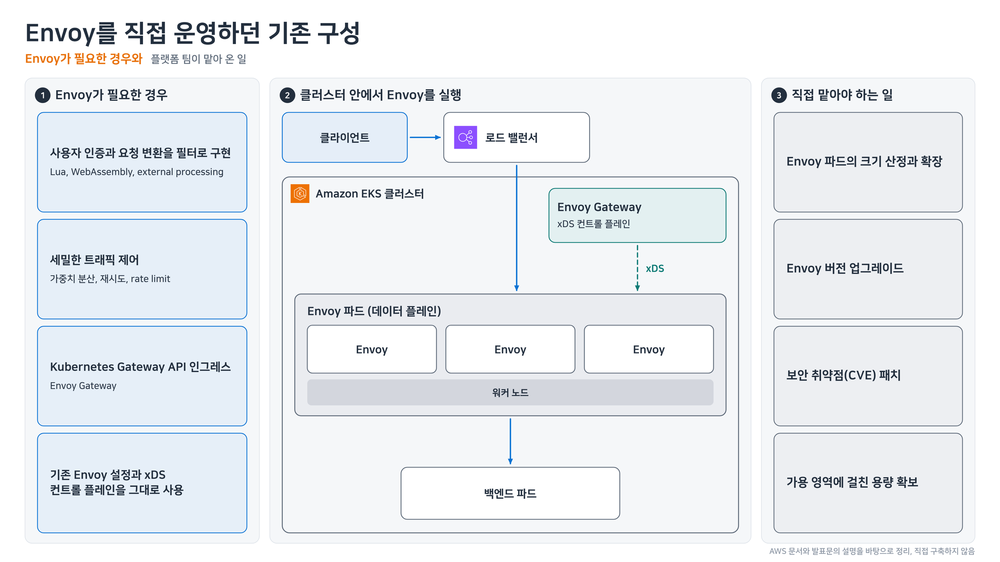
이 구성에서는 Envoy 파드가 운영 대상입니다. 사용 설명서는 그 일을 Envoy 파드의 크기 산정, 확장, 업그레이드, 보안 취약점(CVE) 패치로 정리합니다. 트래픽이 늘면 파드와 노드를 함께 늘려야 하고 Envoy에 취약점이 나오면 모든 프록시를 교체해야 합니다.
ELB for Envoy는 이 Envoy 프록시를 AWS가 운영하는 인스턴스로 옮깁니다. 설정과 컨트롤 플레인은 그대로 사용자가 관리합니다. 출시 시점에 14개 리전에서 제공되고 서울 리전은 포함되지 않아, 이 글은 도쿄 리전에서 테스트한 기록입니다. 기존 구성은 직접 구축하지 않고 문서의 설명을 바탕으로 정리했습니다.
01
노드 3개에서 23개로 확장하며 4,568만 건을 오류 없이 처리
10분 동안 부하를 유지하자 프록시의 노드가 3개에서 23개로 늘었고 처리량은 초당 29,131건에서 100,661건으로 올라갔습니다. 그동안 보낸 45,687,745건은 모두 200으로 응답했습니다. 확장 설정은 하나도 하지 않았습니다. 노드 수는 VPC에 보이는 프록시의 네트워크 인터페이스 수로 셌습니다.
반대로 주의할 결과도 있었습니다. Kubernetes에서는 Envoy Gateway가 컨트롤 플레인으로 클러스터에 남는데, 이 파드가 멈춘 동안 백엔드 파드가 교체되면 프록시가 새 주소를 받지 못해 요청이 실패했습니다. 복구에는 Envoy Gateway가 돌아온 뒤 약 30초가 걸렸습니다.
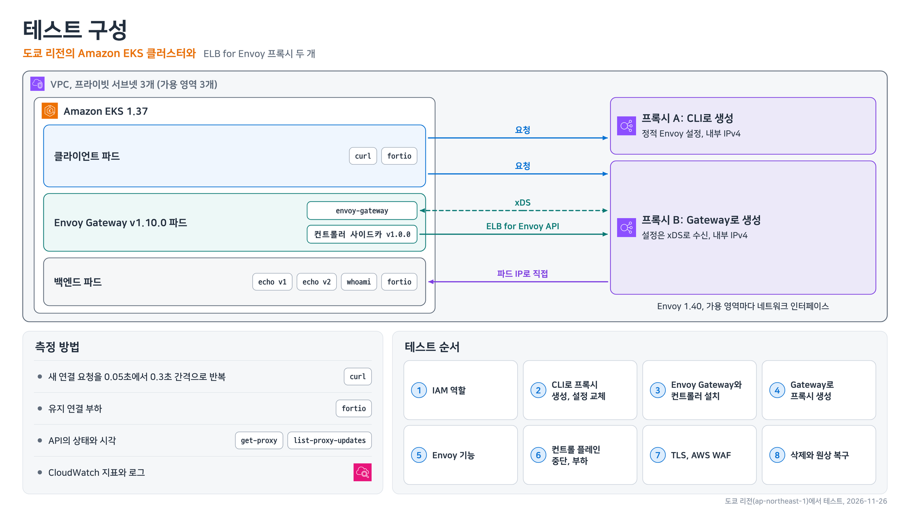
프록시는 두 개를 만들었습니다. 하나는 AWS CLI로 정적 설정을 넣어 만들었고 다른 하나는 Amazon EKS 클러스터의 Gateway 리소스로 만들었습니다. 두 프록시 모두 VPC 안에서만 접근하는 내부(internal) 프록시이고 요청은 클러스터 안의 클라이언트 파드에서 보냈습니다. 글을 올린 뒤 같은 날 2차 테스트를 했습니다. 내부 프록시와 인터넷 연결 프록시를 하나씩 더 만들어 요청이 지나는 경로를 확인했고 그 결과는 요청의 경로를 다루는 두 챕터에 있습니다.
| 항목 | 값 |
|---|---|
| ELB for Envoy | Envoy 1.40, 내부 IPv4, 가용 영역 3개 |
| Amazon EKS | 1.37, Amazon VPC CNI, EKS Pod Identity |
| Envoy Gateway | v1.10.0 |
| 컨트롤러 | elb-envoy-remote-infra-provider v1.0.0 |
| Gateway API CRD | 표준 채널 v1.6.3 |
| AWS CLI | 2.42.4 |
| 클라이언트와 백엔드 노드 | c7i-flex.xlarge 3대, 부하 발생기용 c7i-flex.2xlarge 1대 |
| 도구 | fortio 1.77.0, curl 8.14.1 |
| 2차 테스트 | whoami 파드 3개(가용 영역마다 1개), 외부 클라이언트는 서울 리전의 장비 1대 |
표 1. 테스트 환경. 2026년 11월 26일 도쿄 리전(ap-northeast-1)
aws elb-proxy 명령은 AWS CLI 2.42.4에 처음 들어갔습니다. 2.42.3 이하에서는 명령을 찾지 못하므로 CLI부터 올려야 합니다.
02
용어와 구성 요소의 역할
이 글에는 Envoy의 용어와 Kubernetes Gateway API의 용어가 함께 나옵니다. 구조를 보기 전에 용어를 세 묶음으로 나눠 정리합니다. 요청이 실제로 지나가는 쪽, 설정을 만들어 내려 주는 쪽, 테스트에 사용한 도구입니다. 앞의 둘은 각각 데이터 플레인과 컨트롤 플레인이라고 부릅니다.
요청이 지나가는 쪽의 중심은 Envoy입니다. Envoy의 설정에는 세 부분이 있습니다. 리스너(listener)가 연결을 받고 필터(filter)가 요청을 검사하거나 바꾸며 클러스터(cluster)가 요청을 보낼 백엔드 묶음을 가리킵니다. ELB for Envoy는 이 Envoy를 AWS의 인스턴스에서 실행합니다.
| 용어 | 뜻 | 이 테스트에서 |
|---|---|---|
| Envoy | 요청을 받아 규칙에 따라 백엔드로 전달하는 오픈소스 프록시 | ELB for Envoy가 실행하는 소프트웨어, 버전 1.40 |
| 프록시(proxy) | ELB for Envoy에서 만드는 리소스. Envoy 설정 하나와 DNS 이름 하나를 가짐 | CLI로 만든 것과 Gateway로 만든 것 |
| 프록시 노드 | 프록시의 Envoy를 실행하는 AWS 소유 인스턴스. 내 서브넷에는 네트워크 인터페이스만 보임 | 부하에 따라 3개에서 23개로 증가 |
| 부트스트랩(bootstrap) | Envoy가 시작할 때 읽는 설정 파일 | CLI 프록시에는 설정 전체, Gateway 프록시에는 Envoy Gateway에 접속하는 방법만 기록 |
| 설정 아카이브 | 부트스트랩과 함께 올리는 파일 묶음 | Gateway 프록시에서는 xDS 접속용 인증서와 Envoy Gateway 파드 IP 포함 |
| hot restart | 새 Envoy 프로세스가 리스너를 넘겨받고 이전 프로세스는 남은 연결을 정리한 뒤 종료하는 교체 방식 | 정적 설정을 교체할 때 동작, 제출 16초 뒤 전파 완료 |
| Lua 필터 | Envoy 안에서 Lua 스크립트로 요청과 응답을 다루는 필터 | 응답 헤더 추가로 확인. io, os.getenv, require는 사용 불가 |
| WebAssembly(Wasm) 필터 | 다른 언어로 작성해 Wasm 모듈로 빌드한 로직을 Envoy에서 실행하는 필터 | 테스트하지 않음. 프록시가 Envoy Gateway의 18002 포트에서 모듈을 받는다고 문서에 기재 |
| external processing | 요청과 응답을 외부 gRPC 서비스로 보내 처리를 맡기는 필터 | 테스트하지 않음 |
표 2. 요청이 지나가는 쪽(데이터 플레인)의 용어
설정을 만드는 쪽에서 먼저 알아야 할 용어는 xDS입니다. Envoy는 시작할 때 읽은 설정 파일만으로도 동작하지만 실행 중에 컨트롤 플레인에 접속해 설정을 계속 받아 올 수도 있습니다. 이때 사용하는 API 묶음이 xDS입니다. 이름의 x는 받아 오는 대상이 들어가는 자리이고 DS는 discovery service의 약자입니다. 리스너는 LDS로, 라우트는 RDS로, 클러스터는 CDS로, 클러스터에 속한 파드 주소는 EDS로, 인증서는 SDS로 받습니다. 백엔드 파드가 교체되면 새 주소가 EDS로 내려오므로 Envoy를 다시 시작할 필요가 없습니다.
| 용어 | 뜻 | 이 테스트에서 |
|---|---|---|
| 컨트롤 플레인 | 설정을 계산해 내려 주는 쪽. 요청은 지나가지 않음 | Envoy Gateway |
| 데이터 플레인 | 요청이 실제로 지나가는 쪽 | ELB for Envoy의 프록시 노드 |
| xDS | Envoy가 실행 중에 설정을 받아 오는 API 묶음(LDS, RDS, CDS, EDS, SDS) | 프록시가 Envoy Gateway의 18000 포트에 접속해 사용 |
| ADS, 델타 xDS | ADS는 여러 xDS를 연결 하나로 묶는 방식, 델타는 바뀐 부분만 받는 방식 | 컨트롤러가 만든 부트스트랩이 두 방식을 함께 사용 |
| mTLS | 양쪽이 서로의 인증서를 확인하는 TLS | 프록시와 Envoy Gateway 사이의 xDS 연결 |
| Gateway API | Kubernetes의 트래픽 라우팅 표준 API. GatewayClass, Gateway, HTTPRoute로 구성 | 리스너와 라우팅 규칙을 적는 방법 |
| Envoy Gateway | Gateway API 리소스를 Envoy 설정으로 바꿔 xDS로 내려 주는 오픈소스 컨트롤러 | v1.10.0, 클러스터에 파드로 실행 |
| BackendTrafficPolicy, EnvoyExtensionPolicy | Envoy Gateway가 추가한 정책 리소스. 앞의 것은 재시도와 rate limit, 뒤의 것은 Lua와 Wasm 확장을 설정 | 재시도, 로컬 rate limit, Lua에 사용 |
컨트롤러(elb-envoy-remote-infra-provider) | Envoy Gateway의 요청을 받아 Envoy 파드 대신 ELB for Envoy 프록시를 만드는 오픈소스 컨트롤러 | Envoy Gateway 파드의 사이드카. 프록시, 보안 그룹, Service를 생성 |
ELBProxyConfiguration | 프록시의 AWS 설정(IAM 역할, 주소 방식, 서브넷, 접근을 허용할 대역)을 적어 Gateway에 붙이는 리소스 | 이 리소스가 붙은 Gateway만 프록시로 생성 |
표 3. 설정을 만드는 쪽(컨트롤 플레인)과 Kubernetes 리소스의 용어
Envoy Gateway와 컨트롤러의 관계는 혼동하기 쉽습니다. Envoy Gateway는 원래 두 가지 일을 합니다. Gateway API 리소스를 Envoy 설정으로 바꿔 xDS로 내려 주는 일과, 그 설정을 받을 Envoy 파드를 클러스터에 만드는 일입니다. ELB for Envoy를 사용하면 앞의 일은 Envoy Gateway가 그대로 하고 뒤의 일만 컨트롤러가 넘겨받아 파드 대신 프록시를 만듭니다.
Lua와 WebAssembly는 둘 다 Envoy에 사용자 로직을 넣는 방법이고 쓰임이 다릅니다. Lua는 설정 안에 스크립트를 직접 적으므로 헤더를 추가하거나 조건에 따라 응답을 바꾸는 짧은 처리에 맞습니다. WebAssembly는 Rust나 Go 같은 언어로 작성해 모듈로 빌드한 뒤 올리므로 인증처럼 규모가 있는 로직에 맞습니다. 이번 테스트에서는 Lua만 확인했습니다.
| 용어 | 뜻 | 이 테스트에서 |
|---|---|---|
| curl | 요청을 한 번씩 보내는 명령줄 HTTP 클라이언트 | 새 연결 요청을 0.05초에서 0.3초 간격으로 반복해 실패 건수와 전환 시점 확인 |
| fortio | 초당 요청 수와 연결 수를 정해 부하를 주고 지연 시간 분포를 계산하는 오픈소스 부하 도구 | 지연 시간 비교, 최대 처리량, 10분 부하. 서버 모드는 백엔드로 사용 |
| echo, whoami | 받은 요청의 헤더와 상대 주소를 응답으로 돌려주는 테스트용 서버 | 파드가 본 주소와 헤더 확인 |
| LCU | 로드 밸런서의 사용량 요금 단위 | 처리 바이트, flow, vCPU, 메모리 가운데 가장 큰 값으로 계산 |
표 4. 테스트에 사용한 도구와 요금 단위
03
Envoy Gateway는 클러스터에 남고 Envoy는 AWS가 운영하는 구조
ELB for Envoy에서 만드는 리소스는 프록시(proxy)입니다. 프록시를 만들 때 Envoy 부트스트랩 설정 파일, Envoy 버전, IAM 역할, 서로 다른 가용 영역의 서브넷 두 개 이상, 보안 그룹을 지정합니다. AWS는 그 설정으로 Envoy를 실행하는 노드를 운영하고 사용자의 서브넷에 네트워크 인터페이스를 두어 DNS 이름 하나로 묶습니다. 테스트에서 이 네트워크 인터페이스는 내 계정에 보였지만 연결된 인스턴스는 AWS 서비스 계정의 것이었습니다.
설정을 넣는 방법은 세 가지입니다. 콘솔이나 CLI로 정적 설정을 넣거나, 직접 운영하는 xDS 컨트롤 플레인에 프록시를 연결하거나, Amazon EKS의 Envoy Gateway를 사용합니다. 세 번째 방법에서는 오픈소스 컨트롤러 elb-envoy-remote-infra-provider가 Envoy Gateway 파드의 사이드카로 실행됩니다. Gateway에 ELBProxyConfiguration 리소스를 붙이면 이 사이드카가 ELB for Envoy API를 호출해 프록시를 만듭니다.
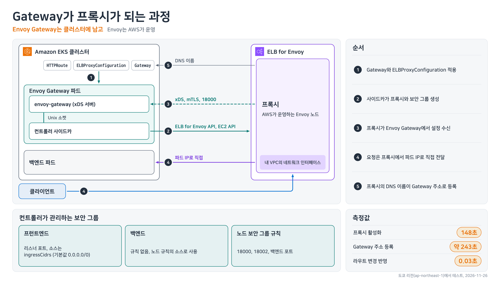
프랜차이즈 식당에 비유하면 이해하기 쉽습니다. 메뉴와 조리법을 정하는 본사(Envoy Gateway)는 우리 건물(클러스터)에 그대로 있고 주방과 조리 인력(Envoy 프록시)만 전문 업체(AWS)가 맡습니다. 손님이 늘면 업체가 인력을 늘리고 주방 설비의 점검도 업체가 합니다. 본사와 연락이 끊겨도 주방은 마지막으로 받은 조리법대로 음식을 내지만 새 메뉴는 받지 못합니다. 실제 동작에서는 본사가 주방에 지시를 보내는 것이 아니라 프록시가 Envoy Gateway에 먼저 접속해 설정을 받아 간다는 점이 다릅니다.
요청은 프록시에서 파드 IP로 직접 전달됩니다. 백엔드 파드가 본 상대 주소는 프록시의 네트워크 인터페이스 주소였고 클라이언트 주소는 X-Forwarded-For 헤더에 들어 있었습니다. 그래서 파드 IP가 VPC에서 라우팅되어야 하고 Amazon VPC CNI가 이 조건을 충족합니다.
04
설정 경로와 요청 경로로 나눠 본 상세 아키텍처
그림 3은 다섯 단계로 줄인 그림입니다. 아래 그림은 같은 구조를 구성 요소 단위로 펼쳤습니다. 맨 위 줄은 설정이 만들어져 프록시에 닿는 경로이고 가운데 줄은 요청이 지나는 경로입니다. 아래 줄은 프록시에 연결하는 AWS 서비스입니다. 주황색 값은 이번 테스트에서 측정한 값입니다.
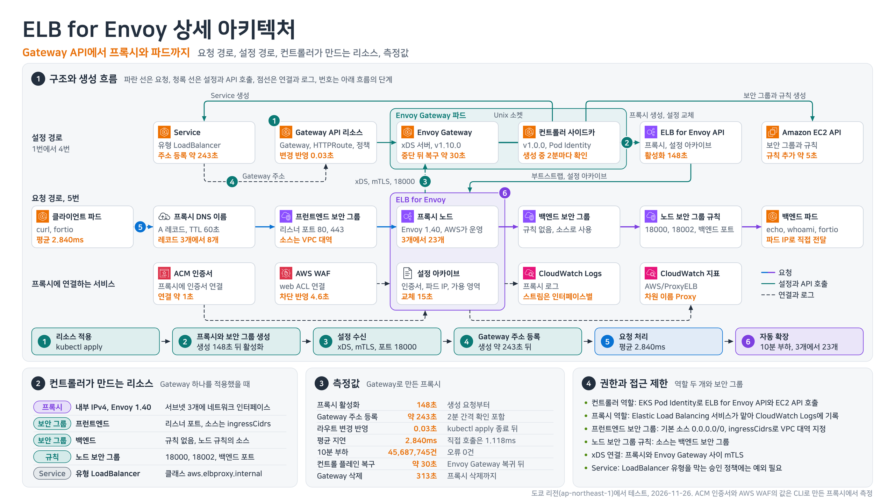
설정 경로는 1번에서 4번까지입니다. Gateway, HTTPRoute, ELBProxyConfiguration을 적용하면(1번) Envoy Gateway가 리소스를 읽고 같은 파드의 컨트롤러 사이드카에 Unix 소켓으로 인프라 생성을 요청합니다. 사이드카는 EKS Pod Identity로 받은 역할로 ELB for Envoy API와 Amazon EC2 API를 호출해 프록시와 보안 그룹을 만듭니다(2번). 프록시는 활성화되면 Envoy Gateway의 18000 포트에 mTLS로 접속해 라우트와 파드 주소를 받습니다(3번). 마지막으로 사이드카가 프록시의 DNS 이름을 Service에 기록하고 Envoy Gateway가 그 값을 Gateway의 주소로 등록합니다(4번).
요청 경로는 5번입니다. 클라이언트가 프록시의 DNS 이름을 조회하면 프록시 노드의 주소가 A 레코드로 돌아옵니다. 연결은 프런트엔드 보안 그룹을 지나 프록시 노드에 닿고 Envoy가 라우트를 선택해 파드 IP로 직접 보냅니다. 프록시에서 나가는 트래픽에는 백엔드 보안 그룹이 붙어 있습니다. 노드 보안 그룹에는 이 백엔드 보안 그룹을 소스로 하는 규칙이 백엔드 포트마다 생깁니다.
이 그림에서 눈여겨볼 곳은 두 군데입니다. 첫째는 프록시에서 Envoy Gateway로 가는 점선(3번)입니다. 이 연결의 목적지는 Envoy Gateway 파드의 IP입니다. Service 주소를 거치지 않으며 그 IP는 설정 아카이브에 들어 있습니다. 파드 IP가 바뀌면 사이드카가 아카이브를 교체해야 프록시가 다시 접속합니다. 뒤에서 볼 컨트롤 플레인 중단 시험의 복구 시간이 여기서 나옵니다. 둘째는 프런트엔드 보안 그룹입니다. 소스를 지정하지 않으면 내부 프록시에서도 0.0.0.0/0으로 열립니다.
아래 줄의 서비스는 프록시에 따로 연결합니다. ACM 인증서와 AWS WAF의 값은 CLI로 만든 프록시에서 측정했습니다. 로그는 프록시 역할로 CloudWatch Logs에 기록되고 지표는 AWS/ProxyELB 네임스페이스에 쌓입니다.
05
파드에서 파드로 가는 요청의 경로
클러스터 안의 파드가 다른 파드를 호출할 때 ELB for Envoy를 거치게 하면 요청은 클러스터 밖의 프록시를 한 번 지나 다시 파드로 들어옵니다. 이 경로를 확인하려고 내부 프록시를 만들고 whoami 파드를 가용 영역마다 하나씩 두었습니다. 그리고 클라이언트 파드에서 요청마다 새 연결을 맺어 600건을 보냈습니다. whoami는 자신이 본 상대 주소와 요청 헤더를 그대로 돌려주는 서버입니다.
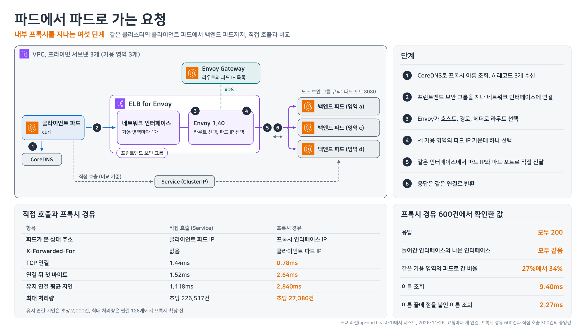
요청은 그림의 번호 순서대로 지나갑니다.
- 이름 조회: 클라이언트 파드가 CoreDNS에 프록시의 DNS 이름을 물으면 A 레코드 3개가 돌아옵니다. 가용 영역마다 하나씩 있는 프록시 네트워크 인터페이스의 사설 IP입니다.
- 연결: 클라이언트는 그 가운데 하나에 TCP 연결을 맺습니다. 이때 프런트엔드 보안 그룹이 포트와 소스를 확인합니다. 600건은 세 인터페이스에 213건, 176건, 211건으로 나뉘었습니다.
- 라우트 선택: Envoy가 요청의 호스트, 경로, 헤더를 HTTPRoute에서 온 규칙과 비교해 백엔드를 정합니다.
- 파드 선택: 백엔드 Service에 속한 파드 IP 가운데 하나를 선택합니다. 이 목록은 Envoy Gateway가 xDS로 내려 준 값입니다.
- 전달: 프록시는 요청을 받은 인터페이스에서 파드 IP와 파드 포트로 직접 보냅니다. Service의 ClusterIP는 지나지 않습니다.
- 응답: 응답은 같은 연결을 따라 클라이언트로 돌아옵니다.
5번은 세 가지 결과로 확인했습니다. 파드가 본 상대 주소는 600건 모두 클라이언트가 접속한 바로 그 인터페이스의 주소였습니다. 노드 보안 그룹에는 파드 포트인 8080이 열렸고 Service 포트인 80은 열리지 않았습니다. 클라이언트 파드의 주소는 X-Forwarded-For 헤더로 전달되었습니다.
# 클라이언트 파드에서 프록시 이름 조회: 가용 영역마다 하나씩 사설 IP 3개. TTL 30은 CoreDNS 캐시를 거친 값
$ dig +noall +answer internal-elblab-web-0123456789abcdef.elb-proxy.ap-northeast-1.on.aws A
internal-elblab-web-0123456789abcdef.elb-proxy.ap-northeast-1.on.aws. 30 IN A 10.0.1.103
internal-elblab-web-0123456789abcdef.elb-proxy.ap-northeast-1.on.aws. 30 IN A 10.0.2.155
internal-elblab-web-0123456789abcdef.elb-proxy.ap-northeast-1.on.aws. 30 IN A 10.0.3.64
# 요청 한 건. whoami가 돌려준 값 가운데 주소와 관련된 줄
$ curl -s http://internal-elblab-web-0123456789abcdef.elb-proxy.ap-northeast-1.on.aws/
Hostname: whoami-6845997d75-d87x8
RemoteAddr: 10.0.1.103:53964 # 프록시 네트워크 인터페이스의 주소
X-Forwarded-For: 10.0.2.66 # 클라이언트 파드의 주소
# 노드 보안 그룹에 컨트롤러가 추가한 인바운드 규칙 (소스는 백엔드 보안 그룹)
18000 xDS
18002 Wasm 모듈
8080 whoami 파드의 포트 (Service 포트는 80)같은 클라이언트 파드에서 Service 이름으로 직접 호출한 300건과 구간별 시간을 비교했습니다.
| 항목 | 직접 호출 (Service) | 프록시 경유 |
|---|---|---|
| 파드가 본 상대 주소 | 클라이언트 파드 IP | 프록시 인터페이스 IP |
X-Forwarded-For | 없음 | 클라이언트 파드 IP |
| 이름 조회 | 2.81ms | 9.40ms |
| TCP 연결 | 1.44ms | 0.78ms |
| 연결 뒤 첫 바이트 | 1.52ms | 2.64ms |
| 전체 | 6.35ms | 11.53ms |
표 5. 새 연결로 보낸 요청의 구간별 시간(중앙값). 프록시 경유 600건, 직접 호출 300건
프록시가 더한 시간은 연결 뒤 첫 바이트까지의 구간에서 1.1ms입니다. 유지 연결로 측정한 평균 차이 1.7ms와 비슷한 크기입니다. 전체 시간의 차이는 대부분 이름 조회에서 나왔습니다.
이름 조회가 긴 이유는 파드의 DNS 설정에 있습니다. 파드의 resolv.conf에는 ndots:5가 들어 있고 프록시 이름에는 점이 4개뿐입니다. 그래서 리졸버가 클러스터의 search 도메인을 붙인 이름부터 차례로 조회합니다. 이름 끝에 점을 붙여 전체 이름임을 알리자 이름 조회의 중앙값이 9.40ms에서 2.27ms로, 전체 시간은 5.41ms로 줄었습니다. 연결을 유지하는 클라이언트는 이 시간을 연결을 맺을 때만 부담합니다.
프록시는 같은 가용 영역의 파드를 우선하지 않았습니다. 요청이 들어온 인터페이스와 같은 영역의 파드로 간 비율은 영역별로 27%에서 34%였습니다. 파드가 세 영역에 하나씩 있으므로 고르게 나눈 것과 같고 요청의 약 3분의 2가 가용 영역을 건너갑니다. 컨트롤러 문서는 설정 아카이브에 영역 정보가 들어가고 영역 인식 라우팅이 이 정보를 사용한다고 설명합니다. 영역 인식 라우팅을 따로 설정해 보지는 않았습니다.
파드 간 호출에 프록시를 넣는 구성은 경로별 규칙이 필요할 때 의미가 있습니다. 가중치 분산, 헤더 라우팅, 재시도, rate limit을 호출하는 쪽의 코드를 수정하지 않고 적용합니다. 규칙이 필요 없는 호출은 Service로 직접 보내는 편이 단계가 하나 적습니다. 최대 처리량도 직접 호출이 초당 226,517건, 확장 전의 프록시가 초당 27,380건으로 차이가 컸습니다.
06
외부 클라이언트에서 파드로 가는 요청의 경로
VPC 밖의 클라이언트가 파드에 접근하려면 인터넷 연결(internet-facing) 프록시가 필요합니다. 주소 방식은 프록시를 만든 뒤에는 바꿀 수 없습니다. 그래서 Gateway를 하나 더 만들고 ELBProxyConfiguration의 ipv4Addressability를 internet-facing으로 지정했습니다. 클라이언트는 서울 리전에 있는 장비 한 대입니다.
apiVersion: gateway.elbproxy.aws/v1alpha1
kind: ELBProxyConfiguration
metadata: {name: edge-proxy, namespace: elb-lab}
spec:
targetRefs:
- {group: gateway.networking.k8s.io, kind: Gateway, name: edge}
name: elblab-edge
roleArn: arn:aws:iam::111122223333:role/elb-envoy-lab-proxy-role
# 프런트엔드 보안 그룹의 소스. 지정하지 않으면 0.0.0.0/0으로 열림
ingressCidrs: ["203.0.113.10/32", "10.0.0.0/16"]
networkConfiguration:
ipConfiguration:
ipAddressingConfiguration:
ipv4Addressability: internet-facing
ipv6Addressability: "off"
attributes:
# 프록시를 만들 때 연결할 AWS WAF web ACL
- key: waf.web_acl_arn
value: arn:aws:wafv2:ap-northeast-1:111122223333:regional/webacl/elb-envoy-lab2-acl/a1b2c3d4-5678-90ab-cdef-EXAMPLE11111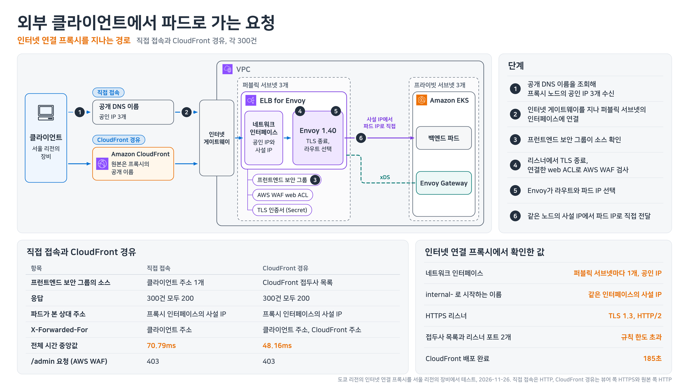
내부 프록시와 다른 점은 네트워크 인터페이스가 놓이는 서브넷과 DNS 이름입니다. 컨트롤러가 만든 Service의 클래스 이름은 인터넷 연결 프록시에서도 aws.elbproxy.internal이었습니다.
| 항목 | 내부 프록시 | 인터넷 연결 프록시 |
|---|---|---|
| 네트워크 인터페이스 | 프라이빗 서브넷마다 1개, 공인 IP 없음 | 퍼블릭 서브넷마다 1개, 각각 공인 IP |
| 컨트롤러가 찾는 서브넷 태그 | kubernetes.io/role/internal-elb | kubernetes.io/role/elb |
| 기본 DNS 이름 | internal-로 시작, 사설 IP 3개 | 접두사 없음, 공인 IP 3개 |
| 추가 DNS 이름 | dualstack. 이름 | internal- 이름(같은 인터페이스의 사설 IP), dualstack. 이름 |
| DNS 레코드의 TTL | 60초 | 60초 |
표 6. 내부 프록시와 인터넷 연결 프록시의 차이. 두 프록시를 만들어 확인한 값
TTL은 권한 있는 네임서버에 직접 물어본 값입니다. 클러스터 안의 파드에서는 CoreDNS의 캐시를 거치므로 30초 이하로 보였습니다.
요청이 지나는 순서는 여섯 단계입니다.
- 이름 조회: 클라이언트가 공개 DNS 이름을 조회하면 프록시 노드의 공인 IP 3개가 돌아옵니다.
- 연결: 연결은 인터넷 게이트웨이를 지나 퍼블릭 서브넷의 네트워크 인터페이스에 닿습니다.
- 소스 확인: 프런트엔드 보안 그룹이 소스를 확인합니다. 이 테스트에서는 클라이언트 주소 하나와 VPC 대역만 허용했습니다.
- TLS와 AWS WAF: HTTPS 리스너라면 프록시가 TLS를 종료합니다. web ACL을 연결했다면 AWS WAF가 요청을 검사합니다.
- 라우트와 파드 선택: Envoy가 라우트와 파드 IP를 선택합니다. 내부 프록시와 같습니다.
- 전달: 요청을 받은 노드가 자신의 사설 IP에서 파드 IP로 직접 보냅니다. 파드는 프라이빗 서브넷에 그대로 있습니다.
서울의 장비에서 새 연결로 보낸 300건은 모두 200이었고 공인 IP 세 개에 99건, 100건, 101건으로 나뉘었습니다. 파드가 본 상대 주소는 요청을 받은 노드의 사설 IP였고 클라이언트의 공인 IP는 X-Forwarded-For와 X-Envoy-External-Address 헤더에 들어 있었습니다. 전체 시간의 중앙값은 70.79ms입니다. TCP 연결에 33.92ms, 그 뒤 첫 바이트까지 35.98ms가 걸렸고 대부분 서울과 도쿄 사이를 오가는 시간입니다.
# VPC 밖의 클라이언트에서 요청 한 건. whoami가 돌려준 값 가운데 주소와 관련된 줄
$ curl -s http://elblab-edge-0123456789abcdef.elb-proxy.ap-northeast-1.on.aws/
Hostname: whoami-6845997d75-6nhpn
RemoteAddr: 10.0.103.21:37528 # 프록시 노드의 사설 IP
X-Envoy-External-Address: 203.0.113.10 # 클라이언트의 공인 IP
X-Forwarded-For: 203.0.113.10
X-Forwarded-Proto: http
# web ACL이 차단하는 경로
$ curl -s -o /dev/null -w '%{http_code}\n' http://elblab-edge-0123456789abcdef.elb-proxy.ap-northeast-1.on.aws/admin
403
# 같은 VPC의 파드에서: 공개 이름은 시간 초과, internal- 이름은 정상
$ curl -s -o /dev/null --max-time 6 -w '%{http_code}\n' http://elblab-edge-0123456789abcdef.elb-proxy.ap-northeast-1.on.aws/
000
$ curl -s -o /dev/null --max-time 6 -w '%{http_code}\n' http://internal-elblab-edge-0123456789abcdef.elb-proxy.ap-northeast-1.on.aws/
200Gateway에 HTTPS 리스너를 추가하고 인증서를 Secret으로 지정하자 TLS 1.3과 HTTP/2로 응답했습니다. web ACL은 waf.web_acl_arn 속성으로 프록시를 만들 때 연결했고 /admin 요청은 HTTP와 HTTPS 모두 403을 받았습니다.
같은 VPC의 파드가 공개 이름으로 접속하면 시간 초과가 납니다. 파드의 트래픽이 NAT 게이트웨이의 주소로 나가서 프런트엔드 보안 그룹의 허용 대상이 아니기 때문입니다. internal-로 시작하는 이름은 같은 인터페이스의 사설 IP를 돌려주므로 VPC 안의 클라이언트는 이 이름을 사용해야 합니다.
CloudFront를 앞에 두는 경우
프록시를 인터넷에 직접 열지 않으려면 프런트엔드 보안 그룹의 소스를 Amazon CloudFront의 origin-facing 접두사 목록으로 제한합니다. ELBProxyConfiguration의 ingressPrefixLists에 접두사 목록 ID를 넣습니다.
처음에는 적용에 실패했습니다. 리스너 포트가 80과 443 두 개인 상태에서 보안 그룹 변경이 RulesPerSecurityGroupLimitExceeded 오류로 거부되었습니다. Gateway에는 FailedDeployModel 경고가 반복해서 남았습니다. Amazon VPC 문서에 따르면 CloudFront 접두사 목록 하나는 규칙 55개로 계산되고 보안 그룹의 기본 규칙 한도는 60개입니다. 포트마다 규칙을 하나씩 추가하므로 포트 두 개는 110개로 계산됩니다. 리스너를 하나로 줄이자 2초 안에 규칙이 추가되었습니다. 포트를 두 개 열려면 규칙 한도를 올려야 합니다.
그다음 CloudFront 배포를 만들고 원본을 프록시의 공개 DNS 이름으로 지정했습니다. CloudFront 주소로 보낸 300건은 모두 200이었고 같은 장비에서 프록시로 직접 접속하면 시간 초과가 났습니다.
| 항목 | 직접 접속 | CloudFront 경유 |
|---|---|---|
| 프런트엔드 보안 그룹의 소스 | 클라이언트 주소 1개 | CloudFront 접두사 목록 |
| 응답 | 300건 모두 200 | 300건 모두 200 |
| 파드가 본 상대 주소 | 프록시 노드의 사설 IP | 프록시 노드의 사설 IP |
X-Forwarded-For | 클라이언트 주소 | 클라이언트 주소, CloudFront 주소 |
X-Envoy-External-Address | 클라이언트 주소 | CloudFront 주소 |
| 전체 시간(중앙값) | 70.79ms | 48.16ms |
/admin 요청 | 403 | 403 |
표 7. 직접 접속과 CloudFront 경유의 비교. 각 300건, 요청마다 새 연결. 직접 접속은 HTTP, CloudFront 경유는 뷰어 쪽 HTTPS와 원본 쪽 HTTP
CloudFront를 거친 쪽의 전체 시간이 더 짧았습니다. 클라이언트가 가까운 엣지와 연결을 맺고 CloudFront가 원본과의 연결을 다시 사용하기 때문으로 추정합니다. 원인을 따로 검증하지는 않았습니다.
CloudFront를 거치면 파드가 받는 헤더가 달라집니다. X-Forwarded-For에 클라이언트 주소와 CloudFront 주소가 차례로 들어가고 X-Envoy-External-Address는 CloudFront 주소가 됩니다. 클라이언트 주소를 기준으로 접근을 제한하거나 rate limit을 적용한다면 Envoy가 신뢰할 프록시 단계 수를 Envoy Gateway의 정책으로 조정해야 합니다. 이 설정은 테스트하지 않았습니다.
07
CLI로 프록시를 만들고 설정을 교체하는 명령
프록시 하나는 Kubernetes 없이 CLI로 만들었습니다. 네트워크 설정은 JSON 파일로, Envoy 설정은 파일 참조로 넘깁니다. 요청 뒤 169초 만에 active가 되었습니다.
$ cat create.json
{
"name": "elblab-static",
"type": "envoy",
"proxyVersion": "1.40",
"roleArn": "arn:aws:iam::111122223333:role/elb-envoy-lab-proxy-role",
"networkConfiguration": {
"ipConfiguration": {"ipAddressingConfiguration": {"ipv4Addressability": "internal", "ipv6Addressability": "off"}},
"vpcConfiguration": {
"subnets": [{"subnetId": "subnet-0aaaaaaaaaaaaaaaa"}, {"subnetId": "subnet-0bbbbbbbbbbbbbbbb"}, {"subnetId": "subnet-0cccccccccccccccc"}],
"securityGroups": [{"securityGroupId": "sg-0123456789abcdef0"}]
}
}
}
$ aws elb-proxy create-proxy \
--cli-input-json file://create.json \
--configuration "configurationFile={configurationBytes@=file://config-v1.yaml}" \
--cli-binary-format raw-in-base64-out \
--query '{name:name,dnsName:dnsName,status:status.code}'
{
"name": "elblab-static",
"dnsName": "internal-elblab-static-0123456789abcdef.elb-proxy.ap-northeast-1.on.aws",
"status": "create-in-progress"
}
# 169초 뒤
$ aws elb-proxy get-proxy --proxy-identifier $PROXY_ARN --query status.code --output text
active
$ dig +noall +answer A internal-elblab-static-0123456789abcdef.elb-proxy.ap-northeast-1.on.aws
internal-elblab-static-0123456789abcdef.elb-proxy.ap-northeast-1.on.aws. 30 IN A 10.0.1.10
internal-elblab-static-0123456789abcdef.elb-proxy.ap-northeast-1.on.aws. 30 IN A 10.0.2.10
internal-elblab-static-0123456789abcdef.elb-proxy.ap-northeast-1.on.aws. 30 IN A 10.0.3.10
$ curl http://internal-elblab-static-0123456789abcdef.elb-proxy.ap-northeast-1.on.aws/
config v1DNS 이름은 가용 영역마다 하나씩 A 레코드 세 개를 돌려주었고 TTL은 30초였습니다. 이어서 요청을 계속 보내는 상태에서 설정 파일을 교체했습니다. 교체 전과 후의 상태는 list-proxy-updates로 확인했습니다.
# 응답 본문만 "config v2"로 바꾼 설정으로 교체
$ aws elb-proxy update-proxy-configuration --proxy-identifier $PROXY_ARN \
--configuration-file "configurationBytes@=file://config-v2.yaml" \
--cli-binary-format raw-in-base64-out --query updateId --output text
a1b2c3d4-5678-90ab-cdef-EXAMPLE11111
# 교체 직후
$ aws elb-proxy list-proxy-updates --proxy-identifier $PROXY_ARN --query 'items[0]'
{
"updateId": "a1b2c3d4-5678-90ab-cdef-EXAMPLE11111",
"type": "update-proxy-configuration",
"validationStatus": "valid",
"propagationStatus": "in-progress",
"submittedAt": "2026-11-26T05:17:29.530000+00:00",
"validatedAt": "2026-11-26T05:17:33.648000+00:00"
}
# 16초 뒤
"propagationStatus": "complete",
"completedAt": "2026-11-26T05:17:45.460000+00:00"설정 파일을 바꾸면 Envoy가 hot restart로 다시 시작합니다. 새 연결로 0.2초마다 보낸 1,116건과 유지 연결로 초당 100건씩 보낸 24,000건이 모두 200이었습니다. 새 설정의 첫 응답은 호출 3.1초 뒤에 왔고 이전 설정의 마지막 응답은 7.1초 뒤였습니다. 노드는 가용 영역 하나씩 차례로 바뀌었고 유지 연결 8개는 각각 한 번씩 다시 맺어졌습니다.
지원하지 않는 설정은 프록시에 도달하기 전에 API 호출에서 거부됩니다. 문서에 적힌 제약을 그대로 넣어 확인했습니다.
| 넣은 설정 | CreateProxy의 응답 (ValidationException) |
|---|---|
proxyVersion 1.39 | Proxy version '1.39' is not supported |
파일 액세스 로그 envoy.access_loggers.file | field 'access_log' must not use the file access logger |
부트스트랩 필드 layered_runtime | field 'layered_runtime' is not a supported bootstrap field |
node.id | field 'node.id' is not a supported bootstrap field |
admin.access_log_path | field 'admin.access_log_path' is not supported |
표 8. 거부되는 설정과 API의 응답. 모두 호출 즉시 반환
08
EKS에 설치하면서 확인한 네 가지
Kubernetes 쪽은 컨트롤러 차트와 Envoy Gateway 차트를 설치하고 Gateway에 ELBProxyConfiguration을 붙이면 됩니다. 컨트롤러의 AWS 권한은 EKS Pod Identity로 Envoy Gateway의 서비스 계정에 주었습니다.
# Envoy Gateway 자체 CRD만 설치 (Gateway API CRD는 이미 있는 것을 사용)
$ helm template eg-crds oci://docker.io/envoyproxy/gateway-crds-helm --version v1.10.0 \
--set crds.gatewayAPI.enabled=false --set crds.envoyGateway.enabled=true \
| kubectl apply --server-side -f -
# 컨트롤러 차트: CRD와 사이드카용 RBAC
$ helm install elb-envoy-remote-infra-provider \
oci://public.ecr.aws/aws-elb-proxy/elb-envoy-remote-infra-provider-chart --version 1.0.0 \
-n elb-envoy-remote-infra-provider-system --create-namespace
# Envoy Gateway: 사이드카와 Remote 인프라 설정이 든 values 파일 사용
$ helm install eg oci://docker.io/envoyproxy/gateway-helm --version v1.10.0 \
-n envoy-gateway-system --create-namespace --set crds.enabled=false -f eg-values.yaml
$ kubectl get pods -n envoy-gateway-system -l control-plane=envoy-gateway
NAME READY STATUS RESTARTS AGE
envoy-gateway-6bb9765477-5fm72 2/2 Running 0 10s설치하면서 문서만으로는 알기 어려웠던 점이 네 가지 있었습니다.
첫째, Gateway API CRD가 이미 있으면 그대로 두고 설치합니다. 컨트롤러의 설치 안내는 이 경우 Gateway API CRD v1.6.1을 다시 적용하게 합니다. 테스트한 클러스터는 다른 컨트롤러가 v1.6.3 CRD를 쓰고 있어서 Envoy Gateway 자체 CRD만 따로 넣고 차트는 crds.enabled=false로 설치했습니다. 이 조합에서도 정상으로 동작했습니다.
둘째, 컨트롤러는 LoadBalancer 유형 Service를 만듭니다. 프록시의 DNS 이름을 Gateway 주소로 전달하는 용도이고 loadBalancerClass가 aws.elbproxy.internal이어서 다른 로드 밸런서가 생기지는 않습니다. 하지만 LoadBalancer 유형을 금지하는 승인 정책을 둔 클러스터에서는 이 클래스에 예외를 두어야 Gateway가 주소를 받습니다.
셋째, 보안 그룹의 기본 소스는 0.0.0.0/0입니다. 컨트롤러가 만드는 프런트엔드 보안 그룹은 내부 프록시에서도 모든 주소를 허용합니다. ingressCidrs에 VPC 대역을 지정했습니다.
넷째, Lua는 기본값이 비활성화입니다. Envoy Gateway v1.10은 extensionApis.enableLua를 설정해야 Lua 정책을 받습니다. 비활성화 상태에서 Lua 정책을 붙이자 정책이 거부되었고 그 경로는 정책을 지울 때까지 500을 돌려주었습니다.
apiVersion: gateway.elbproxy.aws/v1alpha1
kind: ELBProxyConfiguration
metadata:
name: web-proxy
namespace: elb-lab
spec:
targetRefs:
- group: gateway.networking.k8s.io
kind: Gateway
name: web
roleArn: arn:aws:iam::111122223333:role/elb-envoy-lab-proxy-role
ingressCidrs: ["10.0.0.0/16"] # 지정하지 않으면 0.0.0.0/0
networkConfiguration:
ipConfiguration:
ipAddressingConfiguration:
ipv4Addressability: internal
ipv6Addressability: "off" # 따옴표가 없으면 false로 읽힌다# ELBProxyConfiguration을 붙이기 전: 주소가 없고 AWS에는 아무것도 생기지 않는다
$ kubectl get gateway web -n elb-lab
NAME CLASS ADDRESS PROGRAMMED AGE
web elb-proxy-aws False 20s
$ kubectl apply -f proxy.yaml
elbproxyconfiguration.gateway.elbproxy.aws/web-proxy created
# 약 4분 뒤
$ kubectl get gateway web -n elb-lab
NAME CLASS ADDRESS PROGRAMMED AGE
web elb-proxy-aws internal-elblab-web-0123456789abcdef.elb-proxy.ap-northeast-1.on.aws True 4m38s프록시는 생성 148초 뒤에 active가 되었지만 Gateway가 주소를 받은 것은 약 243초 뒤였습니다. 컨트롤러가 생성 중인 프록시를 2분마다 다시 확인하기 때문입니다. 그 사이 컨트롤러는 프런트엔드 보안 그룹과 백엔드 보안 그룹을 만들고 노드 보안 그룹에 18000, 18002, 백엔드 포트를 여는 규칙을 더했습니다. 백엔드 포트가 다른 라우트를 추가하자 규칙도 약 5초 안에 늘었습니다.
09
Gateway API로 사용한 Envoy 기능
라우팅과 정책은 Envoy Gateway를 쓸 때와 같은 리소스로 작성합니다. 프록시가 AWS로 옮겨 가도 리소스를 수정할 필요가 없었고 변경은 xDS로 바로 전달되었습니다. HTTPRoute를 바꾼 kubectl apply가 끝나고 0.03초 뒤의 요청부터 새 규칙으로 응답했습니다.
| 기능 | 리소스 | 결과 |
|---|---|---|
| 가중치 분산 90:10 | HTTPRoute weight | 1,000건 중 901건과 99건 |
| 헤더 라우팅 | HTTPRoute headers | x-canary: true 100건 모두 새 버전으로 전달 |
| 재시도 (503, 최대 3회) | BackendTrafficPolicy retry | 503 비율 28.5%에서 0.9% |
| 로컬 rate limit (초당 10건) | BackendTrafficPolicy rateLimit | 초당 100건 중 31.1건 통과 |
| Lua 스크립트 | EnvoyExtensionPolicy lua | 응답 헤더 추가. io, os.getenv, require는 사용 불가 |
| HTTPS 리스너 | Gateway와 Secret | 2.5초 뒤 TLS 1.3, HTTP/2로 응답 |
| 기본 액세스 로그 (파일) | EnvoyProxy 기본값 | 컨트롤러가 거부하고 프록시를 만들지 않음 |
표 9. Gateway API와 Envoy Gateway 리소스로 확인한 기능. 요청 수는 각 시험에서 보낸 값
재시도는 요청의 30%에 503을 돌려주는 백엔드로 확인했습니다. 정책을 붙이기 전과 후에 같은 요청 2,000건을 보냈습니다.
# 정책 적용 전
$ fortio load -qps 0 -c 4 -n 2000 "http://$GATEWAY_HOST/fortio/echo?status=503:30"
Code 200 : 1430 (71.5 %)
Code 503 : 570 (28.5 %)
$ cat retry.yaml
apiVersion: gateway.envoyproxy.io/v1alpha1
kind: BackendTrafficPolicy
metadata:
name: fortio-retry
namespace: elb-lab
spec:
targetRefs:
- group: gateway.networking.k8s.io
kind: HTTPRoute
name: fortio
retry:
numRetries: 3
perRetry:
backOff: {baseInterval: 10ms, maxInterval: 100ms}
timeout: 1s
retryOn:
httpStatusCodes: [503]
triggers: ["connect-failure", "retriable-status-codes"]
$ kubectl apply -f retry.yaml
# 정책 적용 후
$ fortio load -qps 0 -c 4 -n 2000 "http://$GATEWAY_HOST/fortio/echo?status=503:30"
Code 200 : 1982 (99.1 %)
Code 503 : 18 (0.9 %)로컬 rate limit은 프록시 노드마다 따로 셉니다. 초당 10건으로 제한한 경로에 초당 100건을 20초 동안 보내자 1,998건 중 621건이 통과했습니다. 노드 3개가 각각 10건씩 허용한 값입니다. 프록시가 확장되면 허용량도 함께 늘어나므로 전체 한도를 정확히 지켜야 하는 용도에는 맞지 않습니다. 전체를 하나로 세는 글로벌 rate limit은 이 구성에서 지원하지 않습니다.
10
컨트롤 플레인이 멈추면 새 백엔드를 알지 못합니다
Envoy는 AWS가 운영하지만 Envoy Gateway는 여전히 클러스터의 파드입니다. 이 파드가 멈추면 어떻게 되는지 보기 위해 Envoy Gateway를 0개로 줄이고 요청을 계속 보냈습니다.
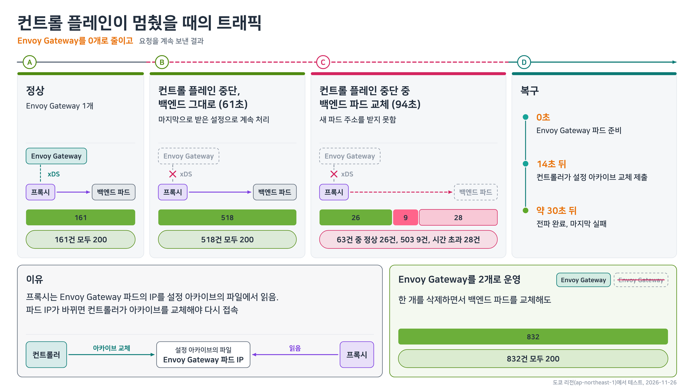
백엔드가 그대로인 동안에는 문제가 없었습니다. 프록시는 마지막으로 받은 설정으로 518건을 모두 처리했습니다. 문제는 그 사이에 백엔드 파드가 교체될 때 생겼습니다. 프록시는 새 파드의 주소를 받지 못해 이미 사라진 주소로 요청을 보냈고 94초 동안 63건 가운데 37건이 503이나 시간 초과로 끝났습니다.
복구에도 시간이 걸렸습니다. 프록시는 Envoy Gateway 파드의 IP를 설정 아카이브에 든 파일에서 읽습니다. Envoy Gateway가 새 IP로 돌아오면 컨트롤러가 아카이브를 교체해야 프록시가 다시 접속합니다. 교체 요청은 새 파드가 준비되고 14초 뒤에 제출되었고 마지막 실패는 약 30초 뒤였습니다.
# 컨트롤 플레인 중단
$ kubectl scale deployment envoy-gateway -n envoy-gateway-system --replicas=0
# 복구 뒤: 컨트롤러가 제출한 아카이브 교체 (새 파드 준비 05:34:10)
$ aws elb-proxy list-proxy-updates --proxy-identifier $PROXY_ARN \
--query 'items[0].{status:propagationStatus,submittedAt:submittedAt,completedAt:completedAt}'
{
"status": "complete",
"submittedAt": "2026-11-26T05:34:24.617000+00:00",
"completedAt": "2026-11-26T05:34:40.376000+00:00"
}
# 프록시 로그: 스트림 이름은 프록시 네트워크 인터페이스의 ID
$ aws logs filter-log-events --log-group-name /aws/elb-proxy/elblab-web \
--filter-pattern '"xds_cluster"' --query 'events[0].message' --output text
[2026-11-26 05:31:30.916][2648][warning][config] [...grpc_stream.h:189] DeltaAggregatedResources gRPC config stream to xds_cluster closed: 13, upstream_reset_after_response_s...대책은 Envoy Gateway를 두 개 이상으로 운영하는 것입니다. 2개로 늘린 뒤 한 개를 삭제하면서 백엔드 파드를 교체했을 때는 832건이 모두 200이었습니다. 컨트롤 플레인이 정상인 상태의 백엔드 롤링 교체에서는 722건 중 1건만 503이었습니다.
11
지연 시간은 평균 1.7ms 늘고 2분 안에 확장을 시작합니다
프록시를 거치면 평균 지연 시간이 1.7ms 늘었습니다. 초당 2,000건을 연결 32개로 40초 동안 보냈을 때 파드에서 Service로 직접 보낸 요청은 평균 1.118ms, 프록시를 거친 요청은 평균 2.840ms였습니다. 프록시를 거치지 않는 호출과 비교한 값이고 클러스터 안에서 실행한 Envoy와 비교한 값은 아닙니다.
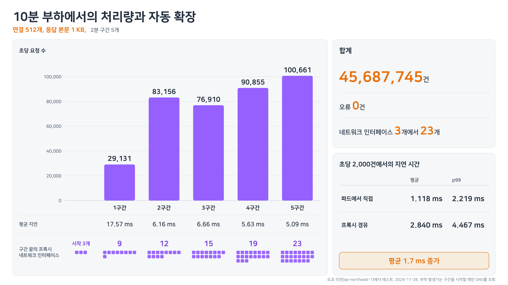
확장은 부하를 건 첫 2분 안에 시작되었습니다. 프록시의 네트워크 인터페이스는 3개에서 2분 뒤 9개가 되었고 10분 뒤에는 23개였습니다. 가용 영역 세 곳에서 함께 늘었습니다. 확장 전의 첫 구간에서는 평균 지연이 17.57ms였고 확장된 뒤에는 5ms에서 7ms 사이로 내려갔습니다. 부하가 급증하는 첫 몇 분 동안은 지연이 늘어난다는 뜻이므로 이 구간을 감안해야 합니다.
부하를 멈춘 뒤 4분 동안은 노드 수가 줄지 않았습니다. 축소에 걸리는 시간은 더 기다려 확인하지 못했습니다. DNS 응답도 달라졌습니다. 노드가 9개 이상일 때 A 레코드는 6개에서 8개만 돌아왔습니다. 클라이언트가 DNS를 한 번만 조회하고 연결을 오래 유지하면 새로 늘어난 노드로 부하가 옮겨 가지 않습니다.
12
ACM 인증서, AWS WAF, CloudWatch 지표
CLI로 만든 프록시에는 AWS Certificate Manager(ACM) 인증서와 AWS WAF를 연결했습니다. 인증서는 프록시에 연결한 뒤 리스너 설정에서 ARN을 이름으로 적어 참조합니다. 개인 키를 설정 파일에 넣지 않아도 됩니다. Gateway로 만든 프록시는 방식이 다릅니다. 인증서를 Kubernetes Secret에 두면 Envoy Gateway가 xDS로 전달합니다.
# ACM 인증서 연결: 1초 남짓 만에 active
$ aws elb-proxy associate-certificate --proxy-identifier $PROXY_ARN \
--certificate-identifier $CERT_ARN --query certificateAssociation.status.code --output text
associate-in-progress
$ aws elb-proxy list-certificate-associations --proxy-identifier $PROXY_ARN \
--query 'items[0].status.code' --output text
active
# AWS WAF 연결 전
$ curl -s -o /dev/null -w '%{http_code}\n' http://$PROXY_DNS/admin
200
# web ACL을 만든 지 8초 뒤의 호출은 실패, 1분 38초 뒤의 호출은 성공
$ aws wafv2 associate-web-acl --web-acl-arn $ACL_ARN --resource-arn $PROXY_ARN
An error occurred (WAFUnavailableEntityException) when calling the AssociateWebACL operation:
AWS WAF couldn't retrieve the resource that you requested. Retry your request.
$ aws wafv2 associate-web-acl --web-acl-arn $ACL_ARN --resource-arn $PROXY_ARN
# 연결 4.6초 뒤부터
$ curl -s -o /dev/null -w '%{http_code}\n' http://$PROXY_DNS/admin
403경로가 /admin으로 시작하면 차단하는 규칙 하나를 넣은 web ACL을 연결하자 4.6초 뒤부터 403이 돌아왔고 세 노드에 모두 적용되기까지 8.9초가 걸렸습니다. 같은 동안 다른 경로의 요청 225건은 모두 200이었습니다.
지표는 CloudWatch의 AWS/ProxyELB 네임스페이스에 있습니다. 사용 설명서의 예는 LoadBalancer 차원에 프록시 ARN을 넣지만 테스트한 날에는 그 조회가 데이터를 돌려주지 않았습니다. 실제 차원은 Proxy였습니다.
$ aws cloudwatch list-metrics --namespace AWS/ProxyELB --metric-name RequestCount \
--query 'Metrics[].Dimensions'
[
[ { "Name": "Proxy", "Value": "proxy/elblab-web:0123456789abcdef" } ]
]
$ aws cloudwatch get-metric-statistics --namespace AWS/ProxyELB --metric-name RequestCount \
--dimensions Name=Proxy,Value=proxy/elblab-web:0123456789abcdef \
--start-time 2026-11-26T05:54:00Z --end-time 2026-11-26T05:57:00Z --period 60 --statistics Sum \
--query 'sort_by(Datapoints,&Timestamp)[].[Timestamp,Sum]' --output text
2026-11-26T05:54:00+00:00 5609328.0
2026-11-26T05:55:00+00:00 5088734.0
2026-11-26T05:56:00+00:00 6040254.0확인한 지표는 RequestCount, 응답 코드별 개수, UpstreamConnectionErrorCount, UpstreamResponseTime입니다. 가격 페이지는 분당 LCU 사용량을 CloudWatch에서 볼 수 있다고 설명하지만 이 네임스페이스에서 LCU 지표는 찾지 못했습니다.
13
ELB for Envoy를 활용하는 경우
AWS는 이 서비스의 용도를 사용자 인증, 요청 변환, 고급 트래픽 라우팅처럼 Envoy의 확장성이 필요한 워크로드와 Kubernetes 인그레스, 직접 운영하던 Envoy의 마이그레이션으로 설명합니다. 테스트 결과를 놓고 보면 다음 경우에 잘 맞습니다.
- Envoy Gateway를 이미 쓰는 클러스터: Gateway API 리소스를 그대로 두고 Envoy 파드만 AWS로 옮깁니다. 라우트와 정책을 수정하지 않았는데 같은 동작을 했습니다.
- 필터가 필요한 인그레스: Lua나 WebAssembly, external processing으로 인증과 요청 변환을 넣으려는 경우입니다. Application Load Balancer(ALB)의 규칙으로는 구현하기 어려운 부분입니다.
- 재시도와 경로별 제한이 필요한 API: 재시도 정책 하나로 503 비율이 28.5%에서 0.9%로 내려갔습니다. 경로마다 다른 rate limit도 정책 리소스로 붙입니다.
- 트래픽 변동이 큰 서비스: 확장을 설정하지 않아도 부하에 따라 노드가 늘었습니다. Envoy 파드와 노드의 여유 용량을 미리 잡아 둘 필요가 없습니다.
- 패치 주기를 맞추기 어려운 팀: Envoy와 운영 체제의 패치를 AWS가 적용합니다. 프록시마다 전용 인스턴스에서 실행되므로 다른 사용자의 프록시와 격리됩니다.
14
제약과 테스트하지 못한 항목
문서에 적힌 제약 가운데 설계에 영향을 주는 것을 표로 정리했습니다. 확인 칸은 이번 테스트에서 직접 본 것인지를 나타냅니다.
| 제약 | 내용 | 확인 |
|---|---|---|
| Envoy 버전 | 출시 시점에는 1.40만 선택 | 확인 |
| 액세스 로그 | 파일, stdout, stderr 로거는 불가. OpenTelemetry 같은 네트워크 싱크만 사용 | 확인 |
| IP 주소 구성 | 내부와 인터넷 연결, IPv4와 IPv6 설정은 생성 뒤 변경 불가 | 문서 |
| 연결 드레이닝 | 설정 교체 때 60초로 고정. 연속 교체는 그 간격 이상으로 | 문서 |
| rate limit | Envoy Gateway 구성에서 글로벌 방식은 미지원. 로컬 방식은 노드마다 계산 | 로컬만 확인 |
| 확장 기능 | dynamic module 미지원, WebAssembly는 V8 런타임만, Lua는 일부 라이브러리 제한 | Lua만 확인 |
| Kubernetes 연동 | API 버전이 v1alpha1이고 문서가 초기 개발 단계라고 설명 | 문서 |
| 할당량 | 리전당 프록시 25개, 설정 파일 128 KB | 문서 |
표 10. 사용 설명서와 컨트롤러 문서의 주요 제약. 2026년 11월 26일 확인
테스트하지 못한 항목도 있습니다. IPv6와 영역 인식 라우팅은 구성하지 않았습니다. WebAssembly와 external processing, 고객 관리형 KMS 키, OpenTelemetry 액세스 로그, 직접 운영하는 xDS 컨트롤 플레인도 테스트하지 않았습니다. 부하가 끝난 뒤의 축소 시간과 실제 청구 금액도 확인하지 못했습니다. 지연 시간과 처리량은 노드 유형과 요청 크기, 필터 구성에 따라 달라집니다.
15
비용과 성능으로 본 판단
Envoy의 기능이 필요한 팀에게는 적용할 만한 선택입니다. 고정 요금은 ALB보다 월 3.94 USD 높은 수준이고 지연 시간은 평균 1.7ms 늘어나는 대신, Envoy 파드의 크기 산정과 패치, 확장을 넘깁니다. 표준 라우팅만 쓴다면 ALB가 더 저렴하고 단순합니다.
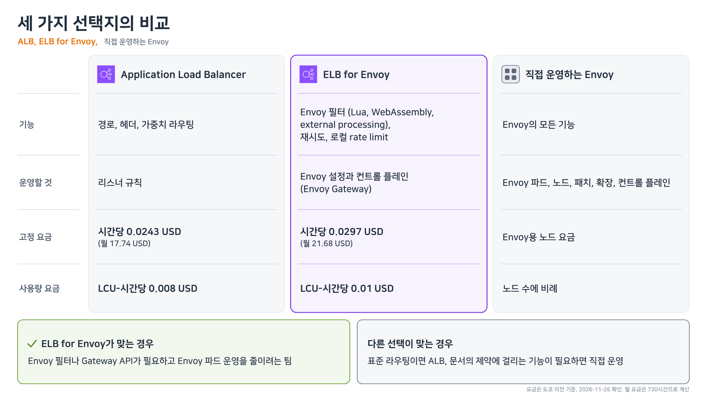
요금은 프록시 시간당 요금과 LCU 요금의 합입니다. LCU는 처리 바이트, flow 수, vCPU, 메모리 가운데 가장 큰 값으로 정해집니다. 아래 표는 처리 바이트만으로 계산한 값입니다. 필터가 무거우면 vCPU 기준이 더 커지고 금액도 늘어납니다.
| 평균 요청 수 | ELB for Envoy | ALB | Envoy 전용 노드 2대 |
|---|---|---|---|
| 초당 100건 | 월 25.10 USD | 월 20.47 USD | 월 311.67 USD |
| 초당 1,000건 | 월 55.85 USD | 월 45.07 USD | 월 311.67 USD |
| 초당 10,000건 | 월 363.32 USD | 월 291.05 USD | 월 311.67 USD |
표 11. 계산으로 구한 월 요금. 도쿄 리전 단가, 730시간, 요청과 응답을 합쳐 1.3 KB로 가정하고 처리 바이트 기준 LCU만 적용. 전용 노드는 c7i-flex.xlarge 2대의 요금이고 운영 인력 비용은 제외
이 계산에서는 평균 초당 약 8,500건부터 전용 노드 2대로 직접 운영하는 쪽의 요금이 낮아집니다. 다만 그 노드 2대가 같은 부하를 처리하는지는 측정하지 않았고 직접 운영에는 패치와 확장을 맡을 사람의 시간이 들어갑니다. 요금만으로 결정하기보다 운영 부담을 함께 놓고 판단해야 합니다.
적용하기 전에는 다섯 가지를 확인합니다.
- 필요한 기능이 ALB의 규칙으로 되는지 먼저 봅니다. 된다면 ALB를 사용합니다.
- Envoy Gateway는 두 개 이상으로 운영합니다. 한 개로 운영하면 그 파드가 바뀔 때 약 30초 동안 프록시가 새 설정을 받지 못합니다.
- 보안 그룹의 소스(
ingressCidrs)를 정하고 클러스터 정책이 LoadBalancer 유형 Service를 허용하는지 설치 전에 확인합니다. - 액세스 로그는 네트워크 싱크로, rate limit은 노드 수에 따라 달라지는 로컬 방식으로 설계합니다.
- 부하가 급증하는 서비스라면 확장 전 몇 분의 지연을 자기 트래픽으로 측정합니다.
Running Envoy yourself: the setup until now
Teams that need Envoy's filters and fine-grained traffic control have had to run and operate Envoy proxies themselves. On November 25, 2026, AWS made Elastic Load Balancing for Envoy (ELB for Envoy) generally available, a load balancer type that runs those Envoy proxies for you.
Envoy is an open source proxy that receives requests and forwards them to backends. Teams use it when they want to implement authentication or request transformation as filters, or to apply rules such as weighted splitting, retries and rate limiting differently for each route. On Kubernetes it is often paired with Envoy Gateway, which turns Gateway API resources into Envoy configuration. In that setup Envoy runs as pods inside the cluster.
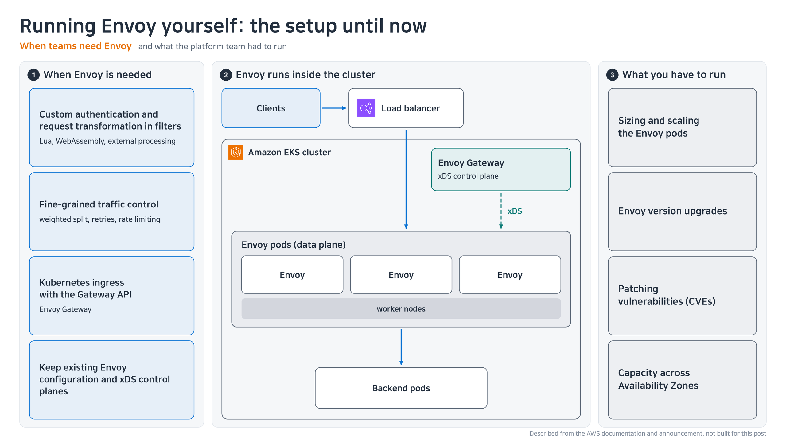
In this setup the Envoy pods are something you operate. The User Guide lists that work as sizing, scaling, upgrading and patching vulnerabilities (CVEs) in the Envoy pods. When traffic grows you add pods and nodes together, and when a vulnerability is found in Envoy you replace every proxy.
ELB for Envoy moves those Envoy proxies onto instances that AWS operates. The configuration and the control plane stay with you. At launch it is offered in 14 Regions and the Seoul Region is not among them, so this post records a test in the Tokyo Region. I did not build the earlier setup; it is described from the documentation.
01
From 3 to 23 nodes while serving 45.7 million requests without an error
Under a load held for 10 minutes the proxy grew from 3 nodes to 23 and throughput rose from 29,131 to 100,661 requests per second. All 45,687,745 requests sent in that time returned 200. I configured nothing for scaling. I counted nodes by the number of the proxy's network interfaces visible in the VPC.
There was also a result to be careful about. On Kubernetes, Envoy Gateway stays in the cluster as the control plane. When backend pods were replaced while that pod was down, the proxy never received the new addresses and requests failed. Recovery took about 30 seconds after Envoy Gateway came back.
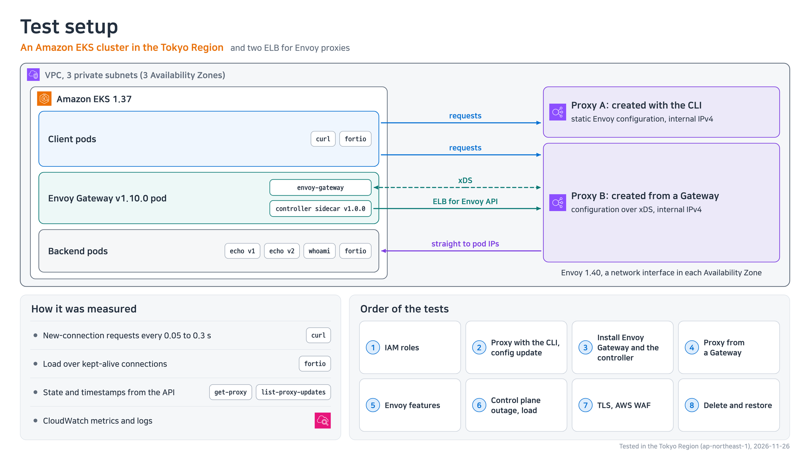
I created two proxies. One was created with the AWS CLI from a static configuration, and the other from a Gateway resource in the Amazon EKS cluster. Both are internal proxies reachable only inside the VPC, and requests came from client pods in the cluster. After the post went up I ran a second test on the same day. I created one more internal proxy and an internet-facing proxy to follow the path a request takes, and those results are in the two chapters on request paths.
| Item | Value |
|---|---|
| ELB for Envoy | Envoy 1.40, internal IPv4, 3 Availability Zones |
| Amazon EKS | 1.37, Amazon VPC CNI, EKS Pod Identity |
| Envoy Gateway | v1.10.0 |
| Controller | elb-envoy-remote-infra-provider v1.0.0 |
| Gateway API CRDs | standard channel v1.6.3 |
| AWS CLI | 2.42.4 |
| Client and backend nodes | 3 x c7i-flex.xlarge, 1 x c7i-flex.2xlarge for the load generator |
| Tools | fortio 1.77.0, curl 8.14.1 |
| Second test | 3 whoami pods (one per Availability Zone), and one machine in the Seoul Region as the outside client |
Table 1. Test environment. Tokyo Region (ap-northeast-1), November 26, 2026
The aws elb-proxy commands first shipped in AWS CLI 2.42.4. Version 2.42.3 and earlier do not know the command, so update the CLI first.
02
Terms and what each component does
This post mixes Envoy terms with Kubernetes Gateway API terms. Before looking at the structure I sort them into three groups: the side that requests actually pass through, the side that builds configuration and hands it down, and the tools used in the test. The first two are called the data plane and the control plane.
Envoy is at the center of the side that requests pass through. An Envoy configuration has three parts. A listener accepts connections, filters inspect or change requests, and a cluster points at a group of backends to send requests to. ELB for Envoy runs this Envoy on instances that AWS owns.
| Term | Meaning | In this test |
|---|---|---|
| Envoy | An open source proxy that receives requests and forwards them to backends by rules | The software ELB for Envoy runs, version 1.40 |
| Proxy | The resource you create in ELB for Envoy. It has one Envoy configuration and one DNS name | One created with the CLI and one created from a Gateway |
| Proxy node | An AWS-owned instance that runs the proxy's Envoy. Only its network interface is visible in my subnet | Grew from 3 to 23 with the load |
| Bootstrap | The configuration file Envoy reads when it starts | The whole configuration for the CLI proxy, only how to reach Envoy Gateway for the Gateway proxy |
| Configuration archive | A bundle of files uploaded with the bootstrap | For the Gateway proxy it holds the certificates for the xDS connection and the Envoy Gateway pod IPs |
| hot restart | A replacement in which a new Envoy process takes over the listeners and the old process finishes its remaining connections and exits | Happens when a static configuration is replaced; propagated 16 seconds after submission |
| Lua filter | A filter that handles requests and responses with a Lua script inside Envoy | Checked by adding a response header. io, os.getenv and require are not available |
| WebAssembly (Wasm) filter | A filter that runs logic written in another language and built into a Wasm module | Not tested. The documentation says the proxy downloads modules from port 18002 of Envoy Gateway |
| external processing | A filter that sends requests and responses to an external gRPC service for processing | Not tested |
Table 2. Terms on the side that requests pass through (data plane)
On the side that builds configuration, the first term to know is xDS. Envoy can work from the configuration file it read at startup alone, but it can also connect to a control plane while running and keep receiving configuration. The set of APIs for that is xDS. The x stands for whatever is being fetched and DS is short for discovery service. Listeners come through LDS, routes through RDS, clusters through CDS, the pod addresses in a cluster through EDS and certificates through SDS. When backend pods are replaced the new addresses arrive through EDS, so Envoy does not have to restart.
| Term | Meaning | In this test |
|---|---|---|
| Control plane | The side that computes configuration and hands it down. Requests do not pass through it | Envoy Gateway |
| Data plane | The side that requests actually pass through | The proxy nodes of ELB for Envoy |
| xDS | The set of APIs through which a running Envoy fetches configuration (LDS, RDS, CDS, EDS, SDS) | The proxy connects to port 18000 of Envoy Gateway |
| ADS, delta xDS | ADS carries several xDS APIs over one connection; delta sends only what changed | The bootstrap the controller builds uses both |
| mTLS | TLS in which each side checks the other's certificate | The xDS connection between the proxy and Envoy Gateway |
| Gateway API | The standard Kubernetes API for traffic routing, made of GatewayClass, Gateway and HTTPRoute | Where listeners and routing rules are written |
| Envoy Gateway | An open source controller that turns Gateway API resources into Envoy configuration and serves it over xDS | v1.10.0, runs as a pod in the cluster |
| BackendTrafficPolicy, EnvoyExtensionPolicy | Policy resources added by Envoy Gateway. The first sets retries and rate limits, the second sets extensions such as Lua and Wasm | Used for retries, local rate limiting and Lua |
Controller (elb-envoy-remote-infra-provider) | An open source controller that takes requests from Envoy Gateway and creates an ELB for Envoy proxy instead of Envoy pods | A sidecar in the Envoy Gateway pod. Creates the proxy, the security groups and the Service |
ELBProxyConfiguration | A resource that holds the proxy's AWS settings (IAM role, addressing, subnets, the ranges allowed in) and attaches to a Gateway | Only a Gateway with this resource becomes a proxy |
Table 3. Terms on the side that builds configuration (control plane) and Kubernetes resources
The relationship between Envoy Gateway and the controller is easy to mix up. Envoy Gateway normally does two jobs. It turns Gateway API resources into Envoy configuration and serves it over xDS, and it creates the Envoy pods that receive that configuration. With ELB for Envoy the first job stays with Envoy Gateway, and the controller takes over only the second job and creates a proxy instead of pods.
Lua and WebAssembly are both ways to put your own logic into Envoy, and they suit different jobs. A Lua script is written straight into the configuration, so it fits short work such as adding a header or changing a response on a condition. A WebAssembly module is written in a language such as Rust or Go, built and then loaded, so it fits larger logic such as authentication. This test checked Lua only.
| Term | Meaning | In this test |
|---|---|---|
| curl | A command line HTTP client that sends one request at a time | New-connection requests every 0.05 to 0.3 seconds, to count failures and find the moment of a switch |
| fortio | An open source load tool that sends at a set rate over a set number of connections and computes the latency distribution | Latency comparison, peak throughput and the 10-minute load. Its server mode served as a backend |
| echo, whoami | Test servers that return the headers and the peer address of the request they received | To see the addresses and headers a pod sees |
| LCU | The usage unit a load balancer is billed by | The largest of processed bytes, flows, vCPU and memory |
Table 4. Tools used in the test and the billing unit
03
Envoy Gateway stays in the cluster and AWS runs Envoy
The resource you create in ELB for Envoy is a proxy. When you create one you give it an Envoy bootstrap configuration file, an Envoy version, an IAM role, two or more subnets in different Availability Zones and security groups. AWS operates the nodes that run Envoy with that configuration, places network interfaces in your subnets and ties them together under one DNS name. In my test those network interfaces were visible in my account, while the instances they were attached to belonged to AWS service accounts.
There are three ways to supply configuration. You put in a static configuration with the console or the CLI, or you connect the proxy to an xDS control plane that you run, or you use Envoy Gateway on Amazon EKS. With the third way the open source controller elb-envoy-remote-infra-provider runs as a sidecar in the Envoy Gateway pod. When you attach an ELBProxyConfiguration resource to a Gateway, this sidecar calls the ELB for Envoy API and creates the proxy.
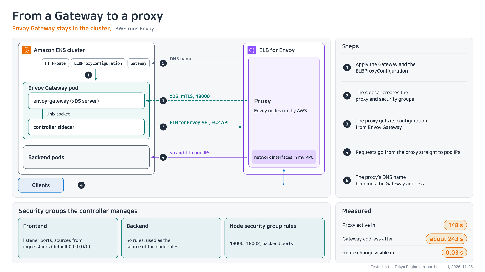
A franchise restaurant makes this easier to picture. The head office that decides the menu and the recipes (Envoy Gateway) stays in our building (the cluster), and only the kitchen and its staff (the Envoy proxies) are handed to a specialist company (AWS). When more guests arrive the company adds staff, and it also maintains the kitchen equipment. If the line to the head office is cut, the kitchen keeps cooking from the last recipes it received, but it gets no new menu. Where the real system differs: the head office does not send instructions to the kitchen; the proxy connects to Envoy Gateway first and fetches its configuration.
Requests go from the proxy straight to pod IPs. The peer address a backend pod saw was a network interface address of the proxy, and the client address was in the X-Forwarded-For header. Pod IPs therefore have to be routable in the VPC, which the Amazon VPC CNI satisfies.
04
The architecture in detail: the configuration path and the request path
Figure 3 is cut down to five steps. The figure below spreads the same structure out by component. The top row is the path on which configuration is built and reaches the proxy, and the middle row is the path a request takes. The bottom row holds the AWS services you attach to the proxy. Values in orange were measured in this test.
![A detailed architecture map: the configuration path in the top row with the Service, the Gateway API resources, Envoy Gateway, the controller sidecar, the ELB for Envoy API and the Amazon EC2 API; the request path in the middle row with client pods, the proxy DNS name, the frontend security group, the proxy nodes, the backend security group, the node security group rules and backend pods; the ACM certificate, AWS WAF, the configuration archive, CloudWatch Logs and CloudWatch metrics in the bottom row; and below it a six-step flow, the resources the controller creates, measured values, and permissions and access limits](elastic-load-balancing-for-envoy-assets/fig07-architecture-en.png)
The configuration path runs from badge 1 to badge 4. When you apply a Gateway, an HTTPRoute and an ELBProxyConfiguration (1), Envoy Gateway reads the resources and asks the controller sidecar in the same pod, over a Unix socket, to create the infrastructure. The sidecar uses the role it gets through EKS Pod Identity to call the ELB for Envoy API and the Amazon EC2 API and creates the proxy and the security groups (2). Once the proxy is active it connects to port 18000 of Envoy Gateway with mTLS and receives routes and pod addresses (3). Last, the sidecar writes the proxy's DNS name into the Service and Envoy Gateway publishes that value as the address of the Gateway (4).
The request path is badge 5. When a client resolves the proxy's DNS name, the addresses of the proxy nodes come back as A records. The connection passes the frontend security group and reaches a proxy node, and Envoy picks a route and sends the request straight to a pod IP. Traffic leaving the proxy carries the backend security group. In the node security group a rule with that backend security group as its source appears for each backend port.
Two places in this figure deserve a closer look. The first is the dashed line from the proxy to Envoy Gateway (3). Its destination is the IP of the Envoy Gateway pod, not a Service address, and that IP sits in the configuration archive. When the pod IP changes, the proxy reconnects only after the sidecar replaces the archive. That is where the recovery time in the control plane outage test further down comes from. The second is the frontend security group. If you do not set its sources it opens to 0.0.0.0/0, also for an internal proxy.
The services in the bottom row are attached to the proxy separately. The values for the ACM certificate and AWS WAF were measured on the proxy created with the CLI. Logs are written to CloudWatch Logs with the proxy role, and metrics go to the AWS/ProxyELB namespace.
05
The path of a request from one pod to another
When a pod in the cluster calls another pod through ELB for Envoy, the request passes once through the proxy outside the cluster and comes back in to a pod. To follow that path I created an internal proxy and placed one whoami pod in each Availability Zone. Then I sent 600 requests from a client pod, each on a new connection. whoami is a server that returns the peer address it saw and the request headers as they are.
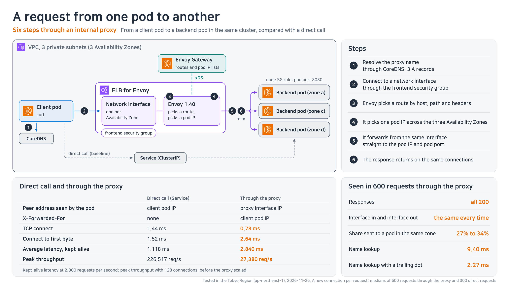
A request passes in the order of the badges in the figure.
- Name lookup: the client pod asks CoreDNS for the proxy's DNS name and gets 3 A records back. They are the private IPs of the proxy's network interfaces, one in each Availability Zone.
- Connect: the client opens a TCP connection to one of them. The frontend security group checks the port and the source. The 600 requests split 213, 176 and 211 across the three interfaces.
- Route: Envoy compares the host, path and headers of the request with the rules that came from the HTTPRoute and decides on a backend.
- Pod: it picks one of the pod IPs that belong to the backend Service. Envoy Gateway delivered that list over xDS.
- Forward: the proxy sends the request from the interface that received it straight to the pod IP and the pod port. It does not go through the ClusterIP of the Service.
- Response: the response returns to the client along the same connections.
Three results confirm step 5. In all 600 requests the peer address the pod saw was the address of the very interface the client had connected to. The node security group opened port 8080, the pod port, and not port 80, the Service port. The address of the client pod arrived in the X-Forwarded-For header.
# resolve the proxy name from the client pod: 3 private IPs, one per Availability Zone. The TTL of 30 went through the CoreDNS cache
$ dig +noall +answer internal-elblab-web-0123456789abcdef.elb-proxy.ap-northeast-1.on.aws A
internal-elblab-web-0123456789abcdef.elb-proxy.ap-northeast-1.on.aws. 30 IN A 10.0.1.103
internal-elblab-web-0123456789abcdef.elb-proxy.ap-northeast-1.on.aws. 30 IN A 10.0.2.155
internal-elblab-web-0123456789abcdef.elb-proxy.ap-northeast-1.on.aws. 30 IN A 10.0.3.64
# one request. The address lines of what whoami returned
$ curl -s http://internal-elblab-web-0123456789abcdef.elb-proxy.ap-northeast-1.on.aws/
Hostname: whoami-6845997d75-d87x8
RemoteAddr: 10.0.1.103:53964 # address of a proxy network interface
X-Forwarded-For: 10.0.2.66 # address of the client pod
# inbound rules the controller added to the node security group (the source is the backend security group)
18000 xDS
18002 Wasm modules
8080 port of the whoami pods (the Service port is 80)I compared the time per segment with 300 direct calls to the Service name from the same client pod.
| Item | Direct call (Service) | Through the proxy |
|---|---|---|
| Peer address seen by the pod | client pod IP | proxy interface IP |
X-Forwarded-For | none | client pod IP |
| Name lookup | 2.81 ms | 9.40 ms |
| TCP connect | 1.44 ms | 0.78 ms |
| Connect to first byte | 1.52 ms | 2.64 ms |
| Total | 6.35 ms | 11.53 ms |
Table 5. Time per segment for requests on new connections (median). 600 requests through the proxy, 300 direct calls
The proxy adds 1.1 ms between the connection and the first byte. That is close to the 1.7 ms average difference measured over kept-alive connections. Most of the difference in total time came from the name lookup.
The name lookup is long because of the pod's DNS settings. The pod's resolv.conf has ndots:5 and the proxy name has only 4 dots, so the resolver first tries the name with each of the cluster's search domains appended. When I ended the name with a dot to mark it as a full name, the median name lookup fell from 9.40 ms to 2.27 ms and the total time to 5.41 ms. A client that keeps its connections pays this only when it opens a connection.
The proxy did not prefer pods in the same Availability Zone. The share of requests that went to a pod in the same zone as the interface they entered was 27% to 34% per zone. With one pod in each of three zones that equals an even split, and about two thirds of the requests cross zones. The controller documentation says the configuration archive carries the zone information and that zone-aware routing uses it. I did not configure zone-aware routing.
Putting a proxy between pods makes sense when you need per-route rules. Weighted splitting, header routing, retries and rate limits apply without changing the calling code. A call that needs no rules has one hop fewer when it goes straight to the Service. Peak throughput differed widely too: 226,517 requests per second for the direct call and 27,380 for the proxy before it scaled.
06
The path of a request from an outside client to a pod
A client outside the VPC needs an internet-facing proxy to reach a pod. The addressing mode cannot change after a proxy is created. So I created one more Gateway and set ipv4Addressability to internet-facing in its ELBProxyConfiguration. The client is one machine in the Seoul Region.
apiVersion: gateway.elbproxy.aws/v1alpha1
kind: ELBProxyConfiguration
metadata: {name: edge-proxy, namespace: elb-lab}
spec:
targetRefs:
- {group: gateway.networking.k8s.io, kind: Gateway, name: edge}
name: elblab-edge
roleArn: arn:aws:iam::111122223333:role/elb-envoy-lab-proxy-role
# sources of the frontend security group. Open to 0.0.0.0/0 when not set
ingressCidrs: ["203.0.113.10/32", "10.0.0.0/16"]
networkConfiguration:
ipConfiguration:
ipAddressingConfiguration:
ipv4Addressability: internet-facing
ipv6Addressability: "off"
attributes:
# the AWS WAF web ACL to associate when the proxy is created
- key: waf.web_acl_arn
value: arn:aws:wafv2:ap-northeast-1:111122223333:regional/webacl/elb-envoy-lab2-acl/a1b2c3d4-5678-90ab-cdef-EXAMPLE11111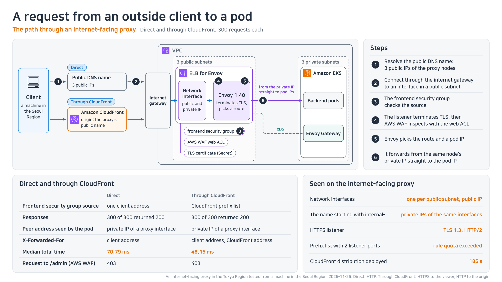
What differs from an internal proxy is the subnets that hold the network interfaces and the DNS names. The class name of the Service the controller created was aws.elbproxy.internal for the internet-facing proxy as well.
| Item | Internal proxy | Internet-facing proxy |
|---|---|---|
| Network interfaces | one per private subnet, no public IP | one per public subnet, each with a public IP |
| Subnet tag the controller looks for | kubernetes.io/role/internal-elb | kubernetes.io/role/elb |
| Main DNS name | starts with internal-, 3 private IPs | no prefix, 3 public IPs |
| Additional DNS names | the dualstack. name | the internal- name (private IPs of the same interfaces), the dualstack. name |
| TTL of the DNS records | 60 seconds | 60 seconds |
Table 6. Differences between the internal and the internet-facing proxy. Values seen on the two proxies I created
The TTL is what the authoritative name servers returned when asked directly. From a pod in the cluster it showed as 30 seconds or less because the answer goes through the CoreDNS cache.
A request passes in six steps.
- Name lookup: the client resolves the public DNS name and gets the 3 public IPs of the proxy nodes.
- Connect: the connection passes the internet gateway and reaches a network interface in a public subnet.
- Source check: the frontend security group checks the source. In this test it allowed one client address and the VPC range.
- TLS and AWS WAF: on an HTTPS listener the proxy terminates TLS. If a web ACL is associated, AWS WAF inspects the request.
- Route and pod: Envoy picks a route and a pod IP, the same as on an internal proxy.
- Forward: the node that received the request sends it from its own private IP straight to the pod IP. The pods stay in private subnets.
All 300 requests sent on new connections from the machine in Seoul returned 200, split 99, 100 and 101 across the three public IPs. The peer address the pod saw was the private IP of the node that received the request, and the client's public IP was in the X-Forwarded-For and X-Envoy-External-Address headers. The median total time was 70.79 ms. The TCP connection took 33.92 ms and the first byte came 35.98 ms after it, most of which is the round trip between Seoul and Tokyo.
# one request from the client outside the VPC. The address lines of what whoami returned
$ curl -s http://elblab-edge-0123456789abcdef.elb-proxy.ap-northeast-1.on.aws/
Hostname: whoami-6845997d75-6nhpn
RemoteAddr: 10.0.103.21:37528 # private IP of the proxy node
X-Envoy-External-Address: 203.0.113.10 # public IP of the client
X-Forwarded-For: 203.0.113.10
X-Forwarded-Proto: http
# a path the web ACL blocks
$ curl -s -o /dev/null -w '%{http_code}\n' http://elblab-edge-0123456789abcdef.elb-proxy.ap-northeast-1.on.aws/admin
403
# from a pod in the same VPC: the public name times out, the internal- name works
$ curl -s -o /dev/null --max-time 6 -w '%{http_code}\n' http://elblab-edge-0123456789abcdef.elb-proxy.ap-northeast-1.on.aws/
000
$ curl -s -o /dev/null --max-time 6 -w '%{http_code}\n' http://internal-elblab-edge-0123456789abcdef.elb-proxy.ap-northeast-1.on.aws/
200When I added an HTTPS listener to the Gateway and pointed it at a certificate in a Secret, the proxy answered with TLS 1.3 and HTTP/2. I associated the web ACL when the proxy was created, through the waf.web_acl_arn attribute, and requests to /admin got 403 over both HTTP and HTTPS.
A pod in the same VPC that uses the public name times out. Its traffic leaves through the address of the NAT gateway, which the frontend security group does not allow. The name that starts with internal- returns the private IPs of the same interfaces, so clients inside the VPC should use that name.
With CloudFront in front
To keep the proxy from being open to the internet directly, limit the sources of the frontend security group to the origin-facing prefix list of Amazon CloudFront. You put the prefix list ID in ingressPrefixLists of the ELBProxyConfiguration.
The first attempt failed. With two listener ports, 80 and 443, the security group change was rejected with RulesPerSecurityGroupLimitExceeded. The Gateway kept logging FailedDeployModel warnings. According to the Amazon VPC documentation one CloudFront prefix list counts as 55 rules and the default quota is 60 rules per security group. Each port adds one rule, so two ports count as 110. When I cut the listeners down to one, the rule was added within 2 seconds. Opening two ports takes a higher rule quota.
Then I created a CloudFront distribution with the proxy's public DNS name as its origin. All 300 requests to the CloudFront address returned 200, and a direct connection to the proxy from the same machine timed out.
| Item | Direct | Through CloudFront |
|---|---|---|
| Frontend security group source | one client address | CloudFront prefix list |
| Responses | 300 of 300 returned 200 | 300 of 300 returned 200 |
| Peer address seen by the pod | private IP of the proxy node | private IP of the proxy node |
X-Forwarded-For | client address | client address, CloudFront address |
X-Envoy-External-Address | client address | CloudFront address |
| Total time (median) | 70.79 ms | 48.16 ms |
Request to /admin | 403 | 403 |
Table 7. Direct access compared with access through CloudFront. 300 requests each, a new connection per request. Direct: HTTP. Through CloudFront: HTTPS to the viewer and HTTP to the origin
The total time was shorter through CloudFront. My guess is that the client connects to a nearby edge and CloudFront reuses its connections to the origin. I did not verify the cause.
The headers a pod receives change through CloudFront. X-Forwarded-For holds the client address followed by a CloudFront address, and X-Envoy-External-Address becomes the CloudFront address. If you limit access or apply rate limits by client address, you have to set how many proxy hops Envoy trusts with an Envoy Gateway policy. I did not test that setting.
07
Commands to create a proxy with the CLI and replace its configuration
I created one proxy with the CLI, without Kubernetes. The network settings go in as a JSON file and the Envoy configuration as a file reference. It became active 169 seconds after the request.
$ cat create.json
{
"name": "elblab-static",
"type": "envoy",
"proxyVersion": "1.40",
"roleArn": "arn:aws:iam::111122223333:role/elb-envoy-lab-proxy-role",
"networkConfiguration": {
"ipConfiguration": {"ipAddressingConfiguration": {"ipv4Addressability": "internal", "ipv6Addressability": "off"}},
"vpcConfiguration": {
"subnets": [{"subnetId": "subnet-0aaaaaaaaaaaaaaaa"}, {"subnetId": "subnet-0bbbbbbbbbbbbbbbb"}, {"subnetId": "subnet-0cccccccccccccccc"}],
"securityGroups": [{"securityGroupId": "sg-0123456789abcdef0"}]
}
}
}
$ aws elb-proxy create-proxy \
--cli-input-json file://create.json \
--configuration "configurationFile={configurationBytes@=file://config-v1.yaml}" \
--cli-binary-format raw-in-base64-out \
--query '{name:name,dnsName:dnsName,status:status.code}'
{
"name": "elblab-static",
"dnsName": "internal-elblab-static-0123456789abcdef.elb-proxy.ap-northeast-1.on.aws",
"status": "create-in-progress"
}
# 169 seconds later
$ aws elb-proxy get-proxy --proxy-identifier $PROXY_ARN --query status.code --output text
active
$ dig +noall +answer A internal-elblab-static-0123456789abcdef.elb-proxy.ap-northeast-1.on.aws
internal-elblab-static-0123456789abcdef.elb-proxy.ap-northeast-1.on.aws. 30 IN A 10.0.1.10
internal-elblab-static-0123456789abcdef.elb-proxy.ap-northeast-1.on.aws. 30 IN A 10.0.2.10
internal-elblab-static-0123456789abcdef.elb-proxy.ap-northeast-1.on.aws. 30 IN A 10.0.3.10
$ curl http://internal-elblab-static-0123456789abcdef.elb-proxy.ap-northeast-1.on.aws/
config v1The DNS name returned three A records, one for each Availability Zone, with a TTL of 30 seconds. Next I replaced the configuration file while requests kept flowing. I read the state before and after the update with list-proxy-updates.
# replace with a configuration that only changes the response body to "config v2"
$ aws elb-proxy update-proxy-configuration --proxy-identifier $PROXY_ARN \
--configuration-file "configurationBytes@=file://config-v2.yaml" \
--cli-binary-format raw-in-base64-out --query updateId --output text
a1b2c3d4-5678-90ab-cdef-EXAMPLE11111
# right after the update
$ aws elb-proxy list-proxy-updates --proxy-identifier $PROXY_ARN --query 'items[0]'
{
"updateId": "a1b2c3d4-5678-90ab-cdef-EXAMPLE11111",
"type": "update-proxy-configuration",
"validationStatus": "valid",
"propagationStatus": "in-progress",
"submittedAt": "2026-11-26T05:17:29.530000+00:00",
"validatedAt": "2026-11-26T05:17:33.648000+00:00"
}
# 16 seconds later
"propagationStatus": "complete",
"completedAt": "2026-11-26T05:17:45.460000+00:00"Changing the configuration file makes Envoy start again through a hot restart. All 1,116 requests sent on new connections every 0.2 seconds and all 24,000 requests sent at 100 per second over kept-alive connections returned 200. The first response from the new configuration came 3.1 seconds after the call and the last response from the old one 7.1 seconds after it. The nodes switched one Availability Zone at a time, and each of the 8 kept-alive connections was re-established once.
A configuration that is not supported is rejected by the API call before it reaches the proxy. I put in the constraints listed in the documentation as they are written.
| Configuration | Answer of CreateProxy (ValidationException) |
|---|---|
proxyVersion 1.39 | Proxy version '1.39' is not supported |
File access log envoy.access_loggers.file | field 'access_log' must not use the file access logger |
Bootstrap field layered_runtime | field 'layered_runtime' is not a supported bootstrap field |
node.id | field 'node.id' is not a supported bootstrap field |
admin.access_log_path | field 'admin.access_log_path' is not supported |
Table 8. Rejected configurations and the answer of the API. Every answer came back at once
08
Four things I found while installing on EKS
On the Kubernetes side you install the controller chart and the Envoy Gateway chart and attach an ELBProxyConfiguration to a Gateway. I gave the controller its AWS permissions through EKS Pod Identity on the service account of Envoy Gateway.
# install only Envoy Gateway's own CRDs (the Gateway API CRDs already in the cluster are kept)
$ helm template eg-crds oci://docker.io/envoyproxy/gateway-crds-helm --version v1.10.0 \
--set crds.gatewayAPI.enabled=false --set crds.envoyGateway.enabled=true \
| kubectl apply --server-side -f -
# controller chart: the CRD and RBAC for the sidecar
$ helm install elb-envoy-remote-infra-provider \
oci://public.ecr.aws/aws-elb-proxy/elb-envoy-remote-infra-provider-chart --version 1.0.0 \
-n elb-envoy-remote-infra-provider-system --create-namespace
# Envoy Gateway: a values file that holds the sidecar and the Remote infrastructure setting
$ helm install eg oci://docker.io/envoyproxy/gateway-helm --version v1.10.0 \
-n envoy-gateway-system --create-namespace --set crds.enabled=false -f eg-values.yaml
$ kubectl get pods -n envoy-gateway-system -l control-plane=envoy-gateway
NAME READY STATUS RESTARTS AGE
envoy-gateway-6bb9765477-5fm72 2/2 Running 0 10sFour things were hard to see from the documentation alone.
First, when the Gateway API CRDs are already there, leave them and install around them. For that case the controller's installation guide has you apply the Gateway API CRDs v1.6.1 again. In the cluster I tested, another controller was using the v1.6.3 CRDs, so I added only Envoy Gateway's own CRDs and installed the chart with crds.enabled=false. It worked with this combination as well.
Second, the controller creates a Service of type LoadBalancer. It carries the proxy's DNS name to the Gateway address, and its loadBalancerClass is aws.elbproxy.internal, so no other load balancer is created. But a cluster with an admission policy that forbids the LoadBalancer type needs an exception for this class, or the Gateway gets no address.
Third, the default source of the security group is 0.0.0.0/0. The frontend security group that the controller creates allows every address, also for an internal proxy. I set ingressCidrs to the VPC range.
Fourth, Lua is disabled by default. Envoy Gateway v1.10 accepts Lua policies only when extensionApis.enableLua is set. When I attached a Lua policy while it was disabled, the policy was rejected and that route returned 500 until I deleted the policy.
apiVersion: gateway.elbproxy.aws/v1alpha1
kind: ELBProxyConfiguration
metadata:
name: web-proxy
namespace: elb-lab
spec:
targetRefs:
- group: gateway.networking.k8s.io
kind: Gateway
name: web
roleArn: arn:aws:iam::111122223333:role/elb-envoy-lab-proxy-role
ingressCidrs: ["10.0.0.0/16"] # 0.0.0.0/0 when not set
networkConfiguration:
ipConfiguration:
ipAddressingConfiguration:
ipv4Addressability: internal
ipv6Addressability: "off" # without the quotes it is read as false# before attaching the ELBProxyConfiguration: no address, and nothing is created in AWS
$ kubectl get gateway web -n elb-lab
NAME CLASS ADDRESS PROGRAMMED AGE
web elb-proxy-aws False 20s
$ kubectl apply -f proxy.yaml
elbproxyconfiguration.gateway.elbproxy.aws/web-proxy created
# about 4 minutes later
$ kubectl get gateway web -n elb-lab
NAME CLASS ADDRESS PROGRAMMED AGE
web elb-proxy-aws internal-elblab-web-0123456789abcdef.elb-proxy.ap-northeast-1.on.aws True 4m38sThe proxy became active 148 seconds after it was created, but the Gateway received its address only after about 243 seconds, because the controller checks a proxy that is being created every 2 minutes. Meanwhile the controller created the frontend and backend security groups and added rules to the node security group that open 18000, 18002 and the backend port. When I added a route with a different backend port, the rules grew within about 5 seconds.
09
Envoy features used through the Gateway API
Routing and policies are written with the same resources as with Envoy Gateway. I did not have to modify a resource when the proxy moved to AWS, and changes were delivered at once over xDS. Requests were answered by the new rule from 0.03 seconds after the kubectl apply that changed the HTTPRoute returned.
| Feature | Resource | Result |
|---|---|---|
| Weighted split 90:10 | HTTPRoute weight | 901 and 99 of 1,000 requests |
| Header routing | HTTPRoute headers | all 100 requests with x-canary: true went to the new version |
| Retries (503, up to 3) | BackendTrafficPolicy retry | 503 share from 28.5% to 0.9% |
| Local rate limit (10 per second) | BackendTrafficPolicy rateLimit | 31.1 of 100 requests per second passed |
| Lua script | EnvoyExtensionPolicy lua | response header added. io, os.getenv and require are not available |
| HTTPS listener | Gateway and a Secret | answered with TLS 1.3 and HTTP/2 after 2.5 seconds |
| Default access log (file) | EnvoyProxy default | the controller rejects it and creates no proxy |
Table 9. Features checked with Gateway API and Envoy Gateway resources. Request counts are what each test sent
I checked retries with a backend that answers 503 to 30% of requests. I sent the same 2,000 requests before and after attaching the policy.
# before the policy
$ fortio load -qps 0 -c 4 -n 2000 "http://$GATEWAY_HOST/fortio/echo?status=503:30"
Code 200 : 1430 (71.5 %)
Code 503 : 570 (28.5 %)
$ cat retry.yaml
apiVersion: gateway.envoyproxy.io/v1alpha1
kind: BackendTrafficPolicy
metadata:
name: fortio-retry
namespace: elb-lab
spec:
targetRefs:
- group: gateway.networking.k8s.io
kind: HTTPRoute
name: fortio
retry:
numRetries: 3
perRetry:
backOff: {baseInterval: 10ms, maxInterval: 100ms}
timeout: 1s
retryOn:
httpStatusCodes: [503]
triggers: ["connect-failure", "retriable-status-codes"]
$ kubectl apply -f retry.yaml
# after the policy
$ fortio load -qps 0 -c 4 -n 2000 "http://$GATEWAY_HOST/fortio/echo?status=503:30"
Code 200 : 1982 (99.1 %)
Code 503 : 18 (0.9 %)A local rate limit is counted separately on each proxy node. When I sent 100 requests per second for 20 seconds to a route limited to 10 per second, 621 of 1,998 requests passed. That is three nodes allowing 10 each. The allowance grows as the proxy scales out, so it does not fit a use that must hold an exact total limit. Global rate limiting, which counts everything as one, is not supported in this setup.
10
When the control plane stops, the proxy does not learn about new backends
AWS runs Envoy, but Envoy Gateway is still a pod in the cluster. To see what happens when that pod stops, I scaled Envoy Gateway to zero and kept sending requests.
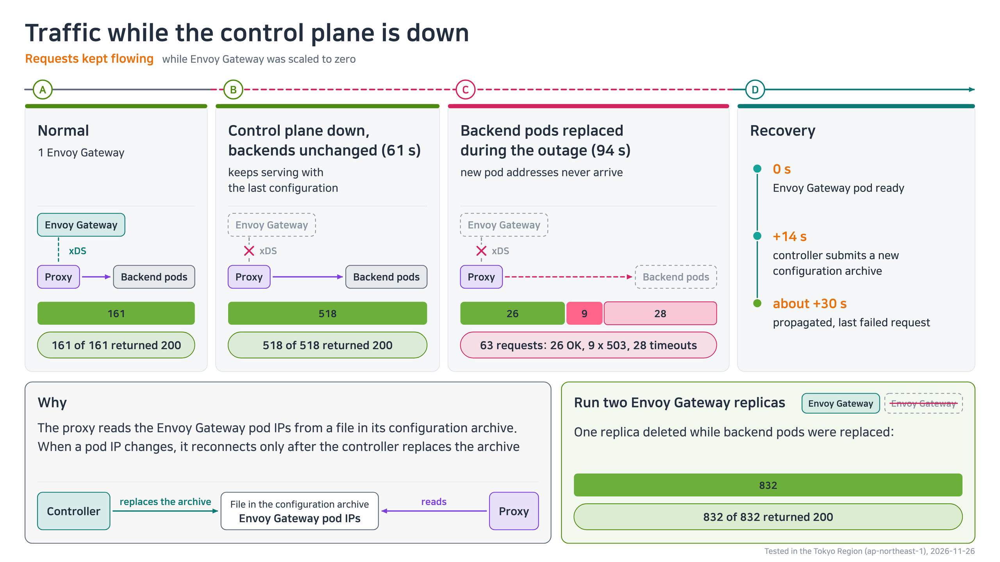
Nothing went wrong while the backends stayed the same. The proxy served all 518 requests with the last configuration it had received. The problem came when backend pods were replaced in that time. The proxy never received the addresses of the new pods and sent requests to addresses that were gone, and 37 of 63 requests in 94 seconds ended in a 503 or a timeout.
Recovery took time as well. The proxy reads the IPs of the Envoy Gateway pods from a file in its configuration archive. When Envoy Gateway comes back with a new IP, the proxy reconnects only after the controller replaces the archive. The update was submitted 14 seconds after the new pod was ready, and the last failed request was about 30 seconds after it.
# stop the control plane
$ kubectl scale deployment envoy-gateway -n envoy-gateway-system --replicas=0
# after recovery: the archive update the controller submitted (new pod ready at 05:34:10)
$ aws elb-proxy list-proxy-updates --proxy-identifier $PROXY_ARN \
--query 'items[0].{status:propagationStatus,submittedAt:submittedAt,completedAt:completedAt}'
{
"status": "complete",
"submittedAt": "2026-11-26T05:34:24.617000+00:00",
"completedAt": "2026-11-26T05:34:40.376000+00:00"
}
# proxy logs: a stream is named after a network interface ID of the proxy
$ aws logs filter-log-events --log-group-name /aws/elb-proxy/elblab-web \
--filter-pattern '"xds_cluster"' --query 'events[0].message' --output text
[2026-11-26 05:31:30.916][2648][warning][config] [...grpc_stream.h:189] DeltaAggregatedResources gRPC config stream to xds_cluster closed: 13, upstream_reset_after_response_s...The remedy is to run two or more Envoy Gateway replicas. With two replicas, when I deleted one while replacing backend pods, all 832 requests returned 200. In a rolling replacement of backends with the control plane running, 1 of 722 requests returned 503.
11
Latency grows by 1.7 ms on average and scaling starts within 2 minutes
Going through the proxy added 1.7 ms to the average latency. At 2,000 requests per second over 32 connections for 40 seconds, requests sent from a pod straight to the Service averaged 1.118 ms and requests through the proxy averaged 2.840 ms. This compares with calls that do not pass through a proxy, not with Envoy running inside the cluster.
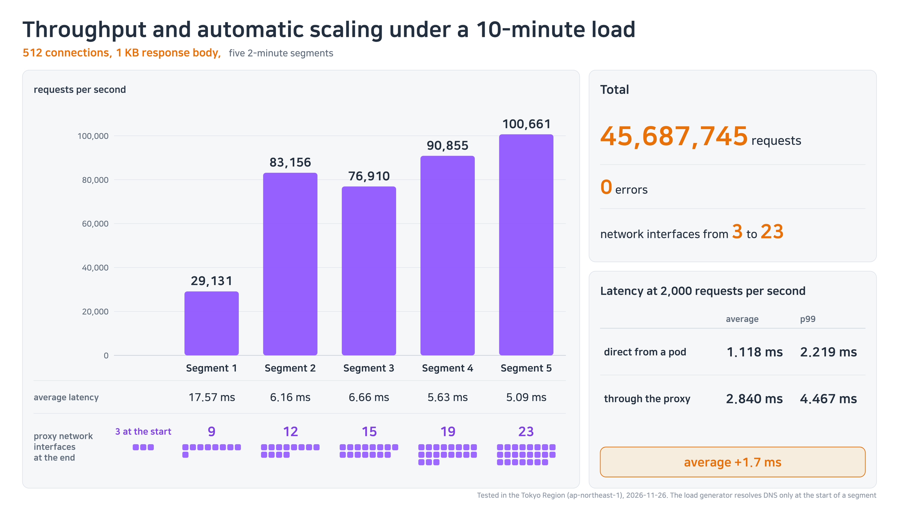
Scaling started within the first 2 minutes of the load. The network interfaces of the proxy went from 3 to 9 after 2 minutes and were 23 after 10 minutes. They grew in all three Availability Zones together. In the first segment, before scaling, the average latency was 17.57 ms, and after scaling it came down to between 5 ms and 7 ms. This means latency grows in the first minutes of a sudden load, so allow for that window.
For 4 minutes after the load stopped, the number of nodes did not go down. I did not wait longer to see how long scale-in takes. The DNS answer changed too. With 9 or more nodes only 6 to 8 A records came back. If a client resolves DNS once and keeps its connections for a long time, load does not move to the nodes that were added.
12
ACM certificates, AWS WAF and CloudWatch metrics
I associated an AWS Certificate Manager (ACM) certificate and AWS WAF with the proxy created with the CLI. After the certificate is associated with the proxy, a listener refers to it by using its ARN as the name. The private key does not go into the configuration file. A proxy created from a Gateway works differently. You keep the certificate in a Kubernetes Secret and Envoy Gateway delivers it over xDS.
# associate the ACM certificate: active in a little over a second
$ aws elb-proxy associate-certificate --proxy-identifier $PROXY_ARN \
--certificate-identifier $CERT_ARN --query certificateAssociation.status.code --output text
associate-in-progress
$ aws elb-proxy list-certificate-associations --proxy-identifier $PROXY_ARN \
--query 'items[0].status.code' --output text
active
# before associating AWS WAF
$ curl -s -o /dev/null -w '%{http_code}\n' http://$PROXY_DNS/admin
200
# the call 8 seconds after creating the web ACL failed, the call 1 minute 38 seconds after it succeeded
$ aws wafv2 associate-web-acl --web-acl-arn $ACL_ARN --resource-arn $PROXY_ARN
An error occurred (WAFUnavailableEntityException) when calling the AssociateWebACL operation:
AWS WAF couldn't retrieve the resource that you requested. Retry your request.
$ aws wafv2 associate-web-acl --web-acl-arn $ACL_ARN --resource-arn $PROXY_ARN
# from 4.6 seconds after the association
$ curl -s -o /dev/null -w '%{http_code}\n' http://$PROXY_DNS/admin
403After I associated a web ACL with one rule that blocks paths starting with /admin, 403 came back from 4.6 seconds on, and it took 8.9 seconds until all three nodes applied it. In the same time all 225 requests to another path returned 200.
Metrics are in the AWS/ProxyELB namespace of CloudWatch. The example in the User Guide puts the proxy ARN in a LoadBalancer dimension, but on the day of the test that query returned no data. The actual dimension was Proxy.
$ aws cloudwatch list-metrics --namespace AWS/ProxyELB --metric-name RequestCount \
--query 'Metrics[].Dimensions'
[
[ { "Name": "Proxy", "Value": "proxy/elblab-web:0123456789abcdef" } ]
]
$ aws cloudwatch get-metric-statistics --namespace AWS/ProxyELB --metric-name RequestCount \
--dimensions Name=Proxy,Value=proxy/elblab-web:0123456789abcdef \
--start-time 2026-11-26T05:54:00Z --end-time 2026-11-26T05:57:00Z --period 60 --statistics Sum \
--query 'sort_by(Datapoints,&Timestamp)[].[Timestamp,Sum]' --output text
2026-11-26T05:54:00+00:00 5609328.0
2026-11-26T05:55:00+00:00 5088734.0
2026-11-26T05:56:00+00:00 6040254.0The metrics I saw were RequestCount, the counts by response code, UpstreamConnectionErrorCount and UpstreamResponseTime. The pricing page says per-minute LCU usage can be seen in CloudWatch, but I did not find an LCU metric in this namespace.
13
Where ELB for Envoy is used
AWS describes the uses of this service as workloads that need Envoy's extensibility, such as custom authentication, request transformation and advanced traffic routing, along with Kubernetes ingress and migrations from self-managed Envoy. Going by the test results, it fits the following cases well.
- Clusters that already use Envoy Gateway: you keep the Gateway API resources and move only the Envoy pods to AWS. It behaved the same although I modified no route or policy.
- Ingress that needs filters: when you want to add authentication and request transformation with Lua, WebAssembly or external processing. This is hard to build with the rules of an Application Load Balancer (ALB).
- APIs that need retries and per-route limits: one retry policy brought the 503 share from 28.5% down to 0.9%. A different rate limit for each route is also attached as a policy resource.
- Services with large swings in traffic: nodes were added with the load although I configured no scaling. You do not have to hold spare capacity for Envoy pods and nodes in advance.
- Teams that struggle to keep up with patching: AWS applies the patches for Envoy and the operating system. Each proxy runs on dedicated instances, so it is isolated from the proxies of other customers.
14
Constraints and what I did not test
I put the constraints from the documentation that affect a design into a table. The last column says whether I saw it myself in this test.
| Constraint | What it says | Checked |
|---|---|---|
| Envoy version | only 1.40 can be chosen at launch | checked |
| Access logs | no file, stdout or stderr logger. Only a network sink such as OpenTelemetry | checked |
| IP addressing | internal or internet-facing and the IPv4 and IPv6 settings cannot change after creation | docs |
| Connection draining | fixed at 60 seconds on a configuration update. Space consecutive updates by at least that long | docs |
| Rate limiting | the global type is not supported with Envoy Gateway. The local type counts on each node | local only |
| Extensions | no dynamic modules, WebAssembly on the V8 runtime only, some Lua libraries restricted | Lua only |
| Kubernetes integration | the API version is v1alpha1 and the documentation calls it early development | docs |
| Quotas | 25 proxies per Region, a configuration file of 128 KB | docs |
Table 10. Main constraints in the User Guide and the controller documentation, as read on November 26, 2026
There are also things I did not test. I did not set up IPv6 or zone-aware routing. I also did not test WebAssembly and external processing, a customer managed KMS key, OpenTelemetry access logs or an xDS control plane of my own. I could not confirm how long scale-in takes after a load ends, or the actual bill. Latency and throughput depend on the node type, the request size and the filters in use.
15
A verdict on cost and performance
For teams that need what Envoy offers, it is worth adopting. The fixed price is 3.94 USD a month above an ALB and latency grows by 1.7 ms on average, and in return you hand over sizing, patching and scaling of the Envoy pods. If you use only standard routing, an ALB is cheaper and simpler.
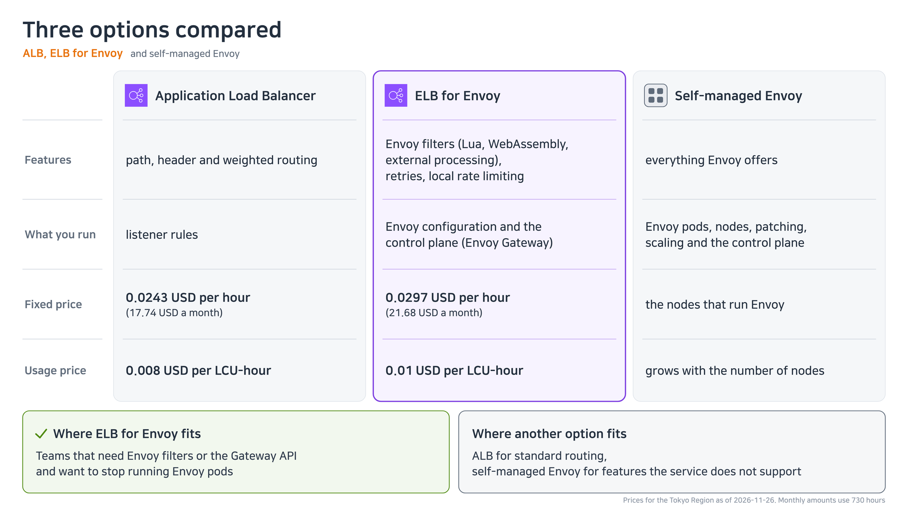
The price is the hourly price of the proxy plus the LCU price. An LCU is set by the largest of processed bytes, flows, vCPU and memory. The table below is calculated from processed bytes alone. With heavy filters the vCPU dimension becomes larger and so does the amount.
| Average requests | ELB for Envoy | ALB | 2 nodes dedicated to Envoy |
|---|---|---|---|
| 100 per second | 25.10 USD a month | 20.47 USD a month | 311.67 USD a month |
| 1,000 per second | 55.85 USD a month | 45.07 USD a month | 311.67 USD a month |
| 10,000 per second | 363.32 USD a month | 291.05 USD a month | 311.67 USD a month |
Table 11. Calculated monthly price. Tokyo Region rates, 730 hours, 1.3 KB for a request and its response together, LCUs from processed bytes only. The dedicated nodes are the price of two c7i-flex.xlarge, without the cost of the people who operate them
In this calculation, running Envoy yourself on two dedicated nodes becomes cheaper from an average of about 8,500 requests per second. I did not measure whether those two nodes handle the same load, though, and running it yourself takes the time of the people who patch and scale it. Weigh the operating work together with the price instead of deciding on price alone.
Check five things before you adopt it.
- See first whether the rules of an ALB can do what you need. If they can, use an ALB.
- Run two or more Envoy Gateway replicas. With one replica the proxy gets no new configuration for about 30 seconds whenever that pod changes.
- Decide the source of the security group (
ingressCidrs) and check before installing whether your cluster policies allow a Service of type LoadBalancer. - Design access logs for a network sink, and rate limiting for the local type, whose allowance changes with the number of nodes.
- For a service with sudden load, measure the latency of the minutes before scaling with your own traffic.